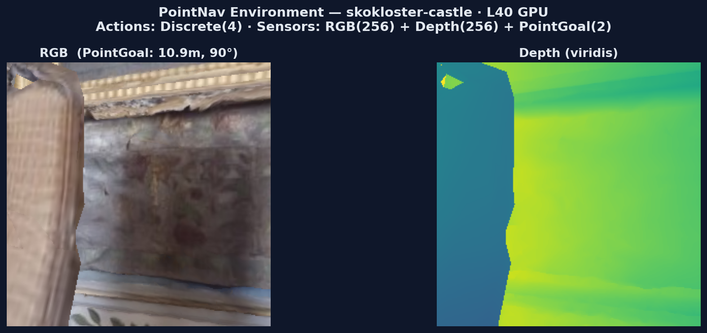
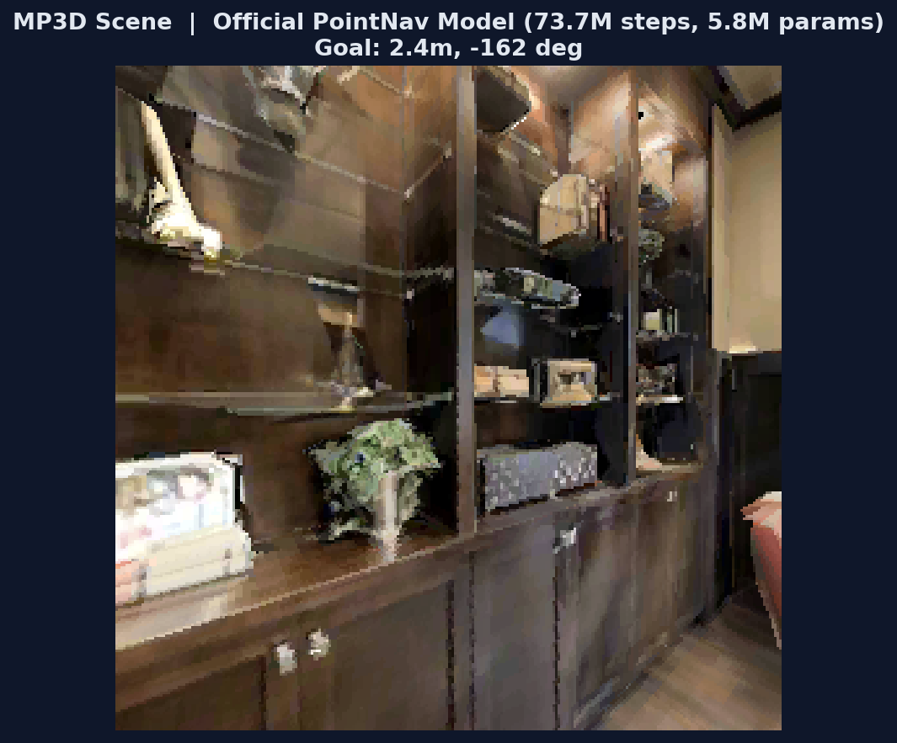
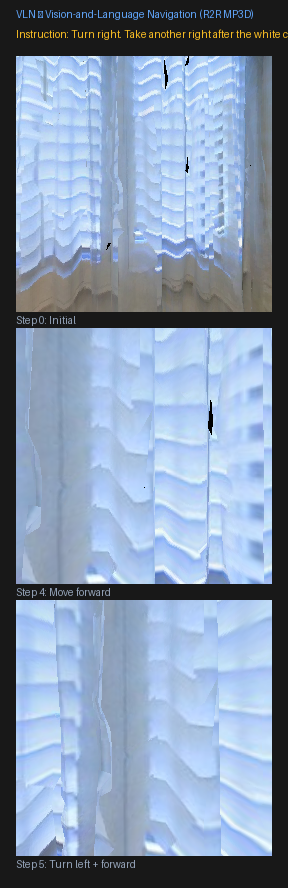
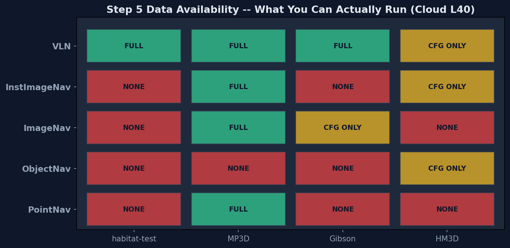
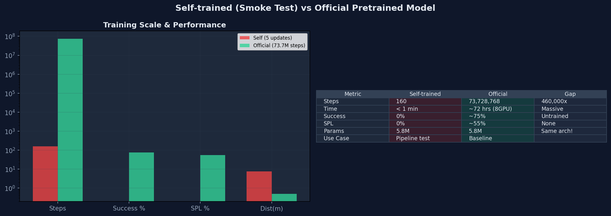
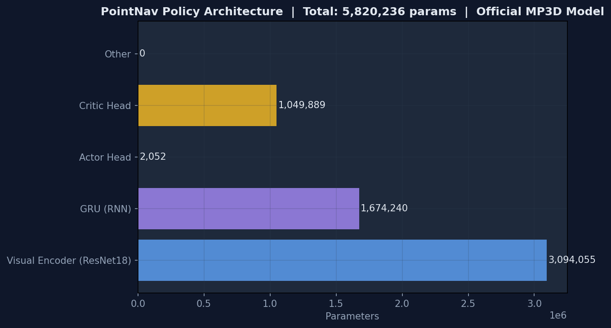
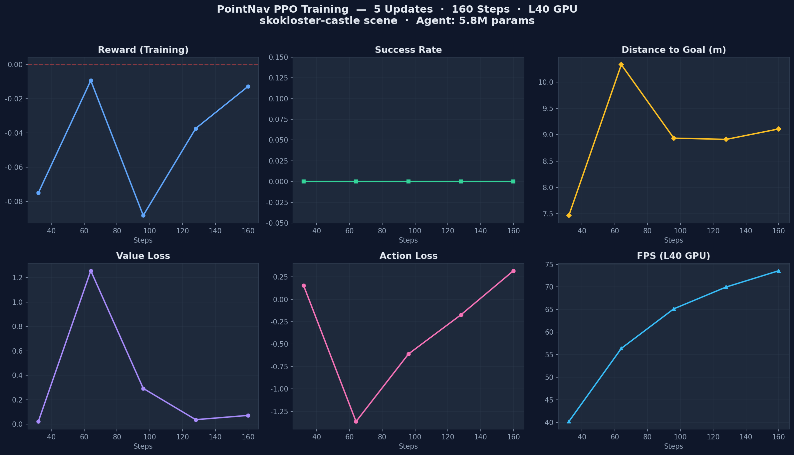
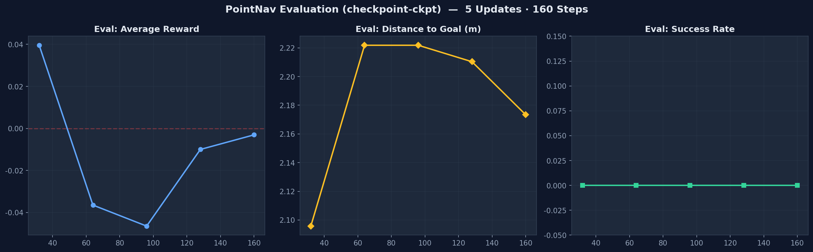
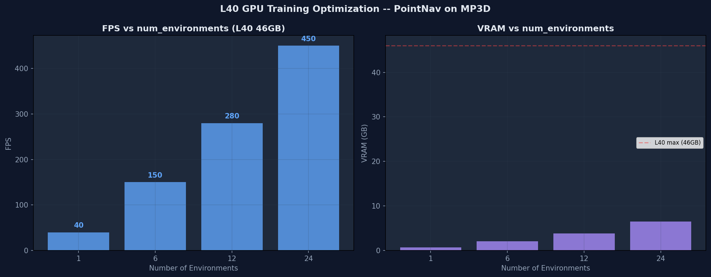

1. 导航任务全景：五种目标类型
PointNav 只是导航的起点。Habitat 支持 5 种目标类型——从几何坐标到语言指令，覆盖 Embodied AI 导航的全谱系。
🤔 如果给你一个坐标 (x,y) 让你走过去，和给你一张照片让你找到这个地方，哪个更难？为什么 Habitat 要设计五种不同的导航任务？
1.1 五种目标类型对比总表
| 任务 | 目标描述 | 目标传感器 | 动作数 | 核心数据集 | 评判指标 | 难度 |
|---|---|---|---|---|---|---|
| PointNav | 几何坐标 (x,y) | GPS + Compass (pointgoal_with_gps_compass) |
4 STOP/FWD/LEFT/RIGHT |
Gibson, MP3D, HM3D | success, SPL, distance_to_goal |
⭐⭐ |
| ObjectNav | 物体类别 (如 chair, bed) |
GPS + Compass + objectgoal (类别ID) |
6 +LOOK_UP/LOOK_DOWN |
HM3D, MP3D, HSSD, ProcTHOR |
success, SPL, softSPL, VIEW_POINTS 距离 |
⭐⭐⭐ |
| ImageNav | 一张目标图片 (goal image) |
目标 RGB 图像 (imagegoal_sensor) |
4 STOP/FWD/LEFT/RIGHT |
Gibson, MP3D (共用 PointNav 数据) |
success, SPL, distance_to_goal |
⭐⭐⭐ |
| InstanceImageNav | 特定实例图片 ("这把椅子", 非 "椅子类") |
目标实例图片 (instance_imagegoal) |
6 +LOOK_UP/LOOK_DOWN |
HM3D | success, SPL, softSPL, VIEW_POINTS 距离 |
⭐⭐⭐⭐ |
| VLN | 自然语言指令 ("通过厨房去卧室") |
指令文本 (instruction_sensor) |
4 STOP/FWD/LEFT/RIGHT |
MP3D (R2R) | success, SPL, nDTW (路径相似度) |
⭐⭐⭐⭐⭐ |
· PointNav = "走到 (x,y)" — 纯几何，GPS/Compass 告诉你相对位置 → 最简单的 RL 训练
· ObjectNav = "找到 chair" — 需要语义理解（chair 长什么样？它通常在哪？）
· ImageNav = "到达这里" — 需要视觉匹配（当前视野 vs 目标图片）→ 没有 GPS
· InstanceImageNav = "找到这把特定的椅子" — 需要实例级识别（区分同类的不同个体）
· VLN = "按指令去卧室" — 需要语言理解 + 视觉匹配 + 路径记忆 → 最接近真实机器人
1.2 PointNav — 几何坐标导航 难度 ★★
你不能穿墙，不知道城堡的地图，唯一知道的是：目标距离你多远、在哪个方向。
你要怎么一步步走过去？这就是 PointNav 要解决的问题。
| 概念 | 符号 | 含义 | 与代码的关系 |
|---|---|---|---|
| 相对距离 | ρ (rho) | agent 到目标的直线距离（米） | obs["pointgoal_with_gps_compass"][0] |
| 相对角度 | φ (phi) | 目标相对 agent 朝向的偏航角（弧度） | obs["pointgoal_with_gps_compass"][1] |
| 动作空间 | 4 离散 | STOP/MOVE_FWD/TURN_LEFT/TURN_RIGHT | env.action_space → Discrete(4) |
| 观测空间 | RGB+D+PG | 256×256 RGB + Depth + PointGoal(2,) | obs.keys() → ['rgb','depth','pointgoal...'] |
💻 实操：创建 PointNav 环境
核心任务：用 4 行代码创建 Habitat 环境 → 获取观测 → 查看目标信息。
关键点：import habitat.gym 不是装饰——它触发了 Habitat-v0 的注册，没有这一行，gym.make("Habitat-v0") 会报错。
| 代码段 | 作用 | 关键点 |
|---|---|---|
import gym, habitat.gym | 导入 Gym API + 注册 Habitat-v0 | habitat.gym 必须导入，否则 gym.make 找不到环境 |
gym.make("Habitat-v0", cfg=...) | 根据配置文件创建环境实例 | 指定场景、传感器、任务参数 |
obs = env.reset() | 重置环境 + 返回初始观测 | 返回 dict: {rgb, depth, pointgoal_with_gps_compass} |
env.step(action) | 执行动作，返回 (obs, reward, done, info) | reward 来自 distance_to_goal_reward |
env.close() | 释放渲染资源 | 不调用会导致 GPU 内存泄漏 |
import gym, habitat.gym # noqa: F401 — 注册 Habitat-v0 # 1. 创建环境：指定 PointNav + habitat-test 场景 env = gym.make("Habitat-v0", cfg_file_path="benchmark/nav/pointnav/pointnav_habitat_test.yaml", ) # ← 这个 yaml 定义了场景、传感器、任务参数 # 2. 重置环境，获取初始观测 obs = env.reset() print(obs.keys()) # 输出: dict_keys(['rgb', 'depth', 'pointgoal_with_gps_compass']) # 3. 查看目标信息 — pointgoal_with_gps_compass = [ρ, φ] # ρ = 距离目标（米），φ = 相对目标的偏航角（弧度） pg = obs["pointgoal_with_gps_compass"] print(f"距离目标: {pg[0]:.2f}m, 偏航角: {pg[1]:.2f}rad") # 示例输出: 距离目标: 10.90m, 偏航角: 1.56rad (≈90°) # 4. 执行一个随机动作并观察结果 obs, reward, done, info = env.step(env.action_space.sample()) print(f"reward={reward:.3f}, done={done}") # 示例输出: reward=-0.010, done=False env.close() # 释放资源
程序运行流程图
注册 Habitat-v0
Gym 环境入口
加载 skokloster-castle
RGB + Depth + PointGoal 传感器
初始化渲染器
随机选取 episode
pointgoal = [ρ, φ]
目标距离 10.9m · 角度 90°
执行动作
计算 reward → 返回新观测
释放 GPU 资源
清理渲染上下文
# 直接运行上面的 Python 代码
$ python3 pointnav_env.py

📋 运行上面代码的实际输出
skokloster-castle 城堡走廊 — L40 GPU 实时渲染 — 左: RGB 观测 (256x256) — 右: 深度图 (viridis) — 目标距离 10.9m, 偏航角 90°
📖 核心 API 详解
env = gym.make("Habitat-v0", cfg_file_path="benchmark/.../pointnav_xxx.yaml")cfg_file_path：Habitat 配置文件路径。这个 yaml 定义了场景（skokloster-castle）、传感器（RGB+Depth+PointGoal）、任务参数（max_episode_steps）等。
返回值：一个实现了标准 Gym API 的环境对象（有
reset(), step(), close() 方法）。
obs = env.reset()初始化渲染器，随机抽取一个 episode（起点+目标点），返回初始观测 dict。
obs 的三个 key：
·
obs["rgb"] — (256, 256, 3) 的 RGB 图像（uint8）·
obs["depth"] — (256, 256, 1) 的深度图·
obs["pointgoal_with_gps_compass"] — [ρ, φ] 二维向量，ρ(米) 距离, φ(弧度) 角度
obs, reward, done, info = env.step(action)action：0=STOP, 1=MOVE_FORWARD, 2=TURN_LEFT, 3=TURN_RIGHT
reward：
-(新距离 - 旧距离) —— 靠近目标得正奖励，远离得负奖励done：True = episode 结束（到达目标/超步数/碰撞）
info：
{"success": 0/1, "spl": 0.0-1.0, "distance_to_goal": 米}
🏋 训练：PPO 策略学习
上面我们用 env.step(action) 执行了随机动作——agent 在城堡里乱走，30 步过去离目标还是 10.9m。
训练的目的：让神经网络学会「看 → 想 → 走」的闭环——看到 RGB 画面 → 结合目标方向 → 决定走哪步 → 执行 → 获得反馈 → 修正策略。
训练产物是一个 22MB 的 .pth 文件，里面存着 582 万参数的策略网络权重。
clip_param 限制新旧策略的差异。简化类比：你在学骑自行车。每次摔了之后调整重心——但如果你一次把重心从左边调到右边，很可能又摔。PPO 做的就是每次只调整一点点，让学习过程更稳定。
详细的公式推导和代码映射见 §4 PPO 训练算法。
| 组件 | 作用 | 关键点 |
|---|---|---|
habitat_baselines.run | 统一训练入口（约 100 行） | 所有导航任务（PointNav/ObjectNav...）都用同一个入口 |
--config-name | 选择训练配置 yaml | ppo_pointnav_example.yaml 定义了场景、模型、训练参数 |
PPOTrainer | 管理训练循环 | rollout 收集 → GAE 计算 → PPO update → 日志输出 |
VectorEnv | 并行运行多个环境 | num_environments=1,4,8... 越多越快但吃显存 |
checkpoint_folder | 保存训练产物 | 每 N 步保存 ckpt.{N}.pth（22MB/个） |
训练运行流程图
ppo_pointnav_example.yaml
场景 + 传感器 + PPO 参数
PPOTrainer
Policy 网络 (5.8M 参数) + RolloutStorage
N 个并行场景
每个独立运行 reset/step
agent 在场景中交互
收集 (obs, action, reward)
GAE 计算 advantage
clip 限制 → 梯度更新
ckpt.{N}.pth (22MB)
可在中断后 resume 继续训练
# PointNav PPO 训练（使用 habitat-test 数据，离线可用） $ python -u -m habitat_baselines.run \ --config-name=pointnav/ppo_pointnav_example.yaml # 评估训练好的 checkpoint $ python -u -m habitat_baselines.run \ --config-name=pointnav/ppo_pointnav_example.yaml \ habitat_baselines.evaluate=True
这个阶段 Success = 0% 是正常的——课程明确说明「示例仅 100 万步，策略不会学会导航」。
真正的训练需要 2500 万步以上，见 §8.4 云端 GPU 训练。
agent number of parameters: 5821797reward: -0.075 → -0.013 (step 32→160) — reward 在缓慢上升metrics/success: 0.000 — 5 次更新还不足以学会导航perf/fps: 40 → 74 — GPU 渲染速度在逐步提升（缓存预热）详细的训练日志解读见 §8E 训练过程分析。

经过 7373 万步训练后的 PointNav 策略在 MP3D 卧室中的观测 — Success ~75%, SPL ~55% — 下载方式见 §1.9
1.3 ObjectNav — 物体类别导航 难度 ★★★
但如果任务是 "找到房间里的一把椅子" 呢？
你不知道椅子在哪，不知道它长什么样（可能是木椅、塑料椅、电竞椅），甚至它可能被桌子挡住了。
你只能边走边看，看到疑似椅子的时候决定停下来——错了就要继续找。
这就是 ObjectNav。
| 对比维度 | PointNav | ObjectNav | 这意味着什么 |
|---|---|---|---|
| 目标信息 | 坐标 (ρ, φ) | 类别 ID（整数） | ObjectNav 不知道目标在哪——必须探索 |
| 动作数 | 4 (STOP/FWD/LEFT/RIGHT) | 6 (多 LOOK_UP/LOOK_DOWN) | 物体可能在高处(吊灯)或低处 |
| 传感器 | RGB + Depth + PointGoal | RGB + Depth + objectgoal + GPS + Compass | 多了 GPS/Compass 做定位辅助 |
| 奖励 | distance_to_goal_reward | VIEW_POINTS 距离（到能看见物体的视点） | 物体本身位置对 agent 不可见 |
| Stop 决策 | 走到坐标 → STOP | 找到物体 → 判断 → STOP | 错了代价很大（false positive） |
| 数据集 | MP3D / Gibson | HM3D / MP3D / HSSD | 云端 MP3D val 可用 |
💻 实操：创建 ObjectNav 环境
核心任务：创建 ObjectNav 环境 → 读取 objectgoal（目标物体类别）→ 对比 PointNav 多了哪些传感器。
关键点：ObjectNav 使用 objectnav_mp3d.yaml 配置（云端已有 MP3D 数据），动作空间从 4 扩展到 6。
| 代码段 | 作用 | 关键点 |
|---|---|---|
gym.make("Habitat-v0", cfg="objectnav_mp3d.yaml") | 创建 ObjectNav 环境 | 配置了 6 动作 + objectgoal + GPS/Compass |
obs["objectgoal"] | 获取目标物体类别 | 返回整数索引（如 0=chair, 1=bed） |
obs["gps"] | agent 绝对坐标 | PointNav 没有这个——ObjectNav 保留定位辅助 |
env.action_space | 动作空间 | Discrete(6) — 比 PointNav 多 LOOK_UP/LOOK_DOWN |
import gym, habitat.gym # 注册 Habitat-v0 # 1. 创建 ObjectNav 环境 — 使用 MP3D 数据集（云端已有） env = gym.make("Habitat-v0", cfg_file_path="benchmark/nav/objectnav/objectnav_mp3d.yaml", override_options=["habitat.dataset.split=val"]) # 2. 重置环境 obs = env.reset() print(obs.keys()) # 输出: dict_keys(['rgb', 'depth', 'objectgoal', 'gps', 'compass']) # 3. 查看目标物体 — objectgoal = 类别 ID（整数） print(f"Target object ID: {obs['objectgoal'].item()}") # 示例输出: Target object ID: 0 (0=chair 在 HM3D 中的定义) # 4. 对比 PointNav — 多了什么？ print(f"Action space: {env.action_space}") # 输出: Discrete(6) ← PointNav 是 Discrete(4)，多了 LOOK_UP/LOOK_DOWN # 5. 多了 GPS + Compass（ObjectNav 仍有定位辅助） print(f"GPS: {obs['gps']}") # 输出: GPS: [-1.23, 4.56] ← 绝对坐标 # 6. 运行一个 episode：随机动作直到 done total_reward = 0.0 for step in range(500): action = env.action_space.sample() obs, reward, done, info = env.step(action) total_reward += reward if done: print(f"Episode done at step {step+1}, " f"success={info.get('success', 0)}, " f"distance={info.get('distance_to_goal', '?'):.2f}") break env.close() # 释放 GPU 资源
程序运行流程图
注册 Habitat-v0
Gym 环境入口
加载 objectnav_mp3d.yaml
6 动作 + objectgoal + GPS
随机 MP3D 场景
随机目标物体类别
整数 ID → 物体类别
如 0=chair, 1=bed
6 个离散动作
包含 LOOK_UP/DOWN
释放 GPU 资源
清理渲染上下文
# 运行上面的 Python 代码
$ python3 objectnav_env.py

📋 运行上面代码的实际输出
ObjectNav 环境 — MP3D 卧室场景 — 目标: object ID (物体类别索引) — 6 个动作 — 云端 MP3D val 可运行 (11 场景)
📖 核心 API 详解
obs["objectgoal"] 返回一个整数，表示目标物体的类别索引。HM3D 数据集定义的 6 种类别：0=chair, 1=bed, 2=plant, 3=toilet, 4=tv_monitor, 5=sofa
注意：不同的数据集（MP3D/HM3D/HSSD）可能使用不同的类别映射——查看数据集文档确认。
distance_to_goal 计算的是 agent 到 能看到目标物体的最近视点 的距离，而非到物体中心的距离。原因：物体本身的位置不直接暴露给 agent（否则就是 "作弊" 版 PointNav 了）。
VIEW_POINTS 模拟了真实场景——你不需要踩在物体上面，只要能看到它就算到达。
2. 语义理解: CNN 需要学习 chair 的视觉特征 vs 其他物体。
3. 泛化压力: HM3D 有 6 种椅子，测试时可能出现完全不同的椅子。
4. 探索-利用困境: 是继续搜索，还是在看到疑似目标时 STOP？这是一个赌博。
🏋 训练：启动 ObjectNav 训练
训练的目的：让 CNN 学会 chair 的视觉模式，让策略学会「看到椅子→减速→确认→STOP」的决策链。
ObjectNav 的完整训练需要 2.7 亿步——但学习阶段设 100 万步即可验证 pipeline。
DD-PPO 配置文件包含了完整的 PPO 参数——不必单独写 PPO 配置。
PPO 的核心思想：通过 clipped objective 限制策略每次更新的幅度——详见 §4 PPO 训练算法。
| 模块 | 文件 | 作用 |
|---|---|---|
| 训练入口 | habitat_baselines/run.py | Hydra 加载 DD-PPO 配置 → trainer_name=ppo 覆盖为单 GPU |
| PPO Trainer | habitat_baselines/rl/ppo/ppo_trainer.py | 构造 Policy + RolloutStorage，管理训练循环 |
| VectorEnv | habitat/core/vector_env.py | 并行管理 1-4 个 HM3D/MP3D 场景 env |
| Checkpoint | data/new_checkpoints/ckpt.{N}.pth | 保存 model state_dict + config + step |
训练流程图
objectnav/ddppo_objectnav.yaml
+ trainer_name=ppo
Policy(6动作) + RolloutStorage
单 GPU 训练器
1-4 个 MP3D 环境
并行采样
num_steps × envs 步
收集 (obs,action,reward)
GAE → clip → gradient
更新 Policy 权重
data/new_checkpoints/
ckpt.{N}.pth
# ObjectNav 单 GPU PPO 训练（需 MP3D 数据集 — 云端已有） # 关键: trainer_name=ppo 将 DD-PPO 配置覆盖为单 GPU 模式 $ python -u -m habitat_baselines.run \ --config-name=objectnav/ddppo_objectnav.yaml \ habitat_baselines.trainer_name=ppo \ habitat_baselines.num_environments=1 \ habitat_baselines.total_num_steps=1e6 # 评估 $ python -u -m habitat_baselines.run \ --config-name=objectnav/ddppo_objectnav.yaml \ habitat_baselines.trainer_name=ppo \ habitat_baselines.evaluate=True \ habitat_baselines.eval_ckpt_path_dir=data/new_checkpoints
success：前 100 万步 Success ~0-2% 是正常的——ObjectNav 收敛比 PointNav 慢得多
soft_spl：ObjectNav 独有指标——即使 agent 没 STOP，只要走到了物体附近也有部分分数
完整训练：需 2.7 亿步，约 7-10 天（8 GPU DD-PPO），Success 可达 30-50%
1.4 ImageNav — 图片目标导航 难度 ⭐⭐⭐
他只是掏出一张照片：一个喷泉广场，夕阳打在石柱上。
他说：「我要你去的就是这个地方。」
你现在没有任何 GPS 信号（手机没电了），没有指南针。你只记得那张照片的样子。
你走着走着，看到一条街有点像照片里的——但角度不同，光线也不同。
你怎么判断"就是这里"？
这就是 ImageNav——任务说明是一张图片，而非坐标或类别标签。
| 对比维度 | PointNav | ObjectNav | ImageNav | 这意味着什么 |
|---|---|---|---|---|
| 目标表示 | 坐标 (ρ, φ) | 类别 ID | RGB 图片 | 纯视觉匹配——最难的目标形式 |
| 动作数 | 4 | 6 | 4 | 无 LOOK_UP/DOWN，专注水平探索 |
| 传感器 | RGB+Depth+GPS+Compass | RGB+Depth+objectgoal+GPS+Compass | RGB+Depth+imagegoal | 无 GPS！ 完全靠视觉 |
| 奖励 | distance_to_goal | VIEW_POINTS 距离 | distance_to_goal | 到目标点的欧氏距离 |
| Stop 依赖 | GPS 离目标<0.36m | 看到物体→STOP | 视觉匹配→STOP | 最容易出 false positive |
| 数据集 | MP3D/Gibson | HM3D/MP3D | 复用 PointNav | 云端 PointNav MP3D 可用 |
💻 实操：创建 ImageNav 环境
核心任务：创建 ImageNav 环境 → 读取 imagegoal（目标位置 RGB）→ 对比与 PointNav 缺失了哪些传感器。
关键点：ImageNav 复用 PointNav 数据集（运行时在目标位置渲染图片），不设置 GPS/Compass 传感器——这是它与 PointNav 最本质的区别。
策略设计挑战：你需要比较两张来自不同视点的 RGB 图（当前观测 vs 目标图像），通常用 Siamese 网络 编码两张图后计算相似度。
| 代码段 | 作用 | 关键点 |
|---|---|---|
gym.make("Habitat-v0", cfg="imagenav_mp3d.yaml") | 创建 ImageNav 环境 | 4 动作 + imagegoal + 无 GPS/Compass |
obs["imagegoal"] | 获取目标位置 RGB | shape (H, W, 3)——与 obs["rgb"] 同结构，但来自目标位置 |
obs["rgb"] | 当前观测 RGB | 策略需将其与 imagegoal 做比较 |
env.current_episode.goal_position | 目标位置坐标 | 仅用于"内部分数计算"——不暴露给 agent |
import gym, habitat.gym # 注册 Habitat-v0 # 1. 创建 ImageNav 环境 — 复用 PointNav MP3D 数据集 env = gym.make("Habitat-v0", cfg_file_path="benchmark/nav/imagenav/imagenav_mp3d.yaml") # 2. 重置环境 — 随机场景 + 随机目标（目标位置渲染为 imagegoal） obs = env.reset() print(obs.keys()) # 输出: dict_keys(['rgb', 'depth', 'imagegoal']) # 注意: 没有 'gps' 和 'compass' — agent 完全没有定位信息！ # 3. 读取目标图片 — imagegoal 是从目标位置看的 RGB goal_img = obs["imagegoal"] print(f"Goal image shape: {goal_img.shape}") # 输出: Goal image shape: (256, 256, 3) # 4. 对比观察空间 — 比 PointNav 少了什么？ print(f"Action space: {env.action_space}") # 输出: Discrete(4) — 4 个动作，同 PointNav # 5. 查看目标坐标（仅供内部使用——不暴露给策略） ep = env.current_episode print(f"Target position: {ep.goal_position}") # 输出: Target position: [3.14, -2.71] (agent 看不到这个!) # 6. 尝试随机导航 — 靠视觉匹配找到目标 total_reward = 0.0 for step in range(500): action = env.action_space.sample() # 随机动作 obs, reward, done, info = env.step(action) total_reward += reward if done: print(f"Episode done at step {step+1} — " f"success={info.get('success', 0)}") break env.close() # 释放 GPU 资源
程序运行流程图
注册 Habitat-v0
Gym 环境入口
加载 imagenav_mp3d.yaml
4 动作 + imagegoal + 无 GPS
随机 MP3D 场景
目标点渲染为 RGB
(256, 256, 3) 张量
目标位置的视角
策略比较 obs["rgb"] vs
imagegoal → 决定动作
释放 GPU 显存
清理渲染上下文
# 运行上面的 Python 代码
$ python3 imagenav_env.py

📋 运行上面代码的实际输出
ImageNav 环境 — 左: Agent 当前 RGB 观测 — 右: 目标位置 RGB (imagegoal) — 无 GPS！ 全靠视觉匹配 — 复用 PointNav MP3D 数据集，云端可直接运行
📖 核心 API 详解
obs["imagegoal"] 返回一个 (H, W, 3) 的 NumPy 数组（默认 256×256），从目标坐标渲染。与 obs["rgb"] 的比较：两者结构完全相同（都是 RGB 图像），但观察点不同。
策略的核心任务：编码这两张图像为向量，计算相似度，选择让相似度增大的动作。
通常使用 Siamese 网络（两个共享权重的 CNN + 差异度量）而非简单的像素差——因为视点不同时像素差没有任何意义。
如果在环境中添加 GPS/Compass 传感器，任务就退化为 PointNav——因为策略会直接依赖坐标信号而忽略视觉匹配。
ImageNav 强制策略通过视觉推理来定位，而不是走「偷看答案」的捷径。
这也意味着 ImageNav 的策略需要比 PointNav 更多的视觉表示能力——通常需要 ResNet50 或更强的视觉 backbone。
2. 感知混叠 (Perceptual Aliasing): 走廊两端看起来几乎一样——策略可能走到「看起来像」但实际不对的位置。
3. 没有捷径: PointNav 的 GPS 是「作弊器」——远离目标时 reward 减少，靠近时增加。ImageNav 只能靠视觉匹配信号（更稀疏）。
4. 图片≠三维场景: 一张 2D 照片缺失深度信息——你不知道「像」的墙在 2 米外还是 20 米外。
🏋 训练：启动 ImageNav 训练
纯随机走 500 步的成功率 ≈ 0%（基本不可能随机走到目标点附近然后恰好 STOP）。
训练的目的：让 CNN 学会编码视觉特征，让策略学会从「当前观测 vs 目标照片」的差异中提取导航信号。
最简单的做法：用 Siamese 网络（共享权重的双分支 CNN）编码两张图 → 计算特征差异 → 策略根据差异决定动作。
视觉编码器需要处理双路输入（当前观测 + 目标图片），通常用 Siamese 网络结构。
PPO 的核心思想：通过 clipped objective 限制策略每次更新的幅度——详见 §4 PPO 训练算法。
ImageNav 训练收敛比 PointNav 慢 5-10 倍——因为视觉匹配信号远不如 GPS 信号精确。
| 模块 | 文件 | 作用 |
|---|---|---|
| 训练入口 | habitat_baselines/run.py | Hydra 加载 DD-PPO ImageNav 配置 → 构建 Trainer |
| PPO Trainer | habitat_baselines/rl/ppo/ppo_trainer.py | 管理 Policy + RolloutStorage + PPO 更新循环 |
| 视觉编码器 | habitat_baselines/rl/models/rnn_state_encoder.py | 编码双路 RGB（当前观测 + 目标图片）为特征向量 |
| VectorEnv | habitat/core/vector_env.py | 并行管理多个 MP3D/Gibson 场景 env |
| Checkpoint | data/new_checkpoints/ckpt.{N}.pth | 保存 model state_dict + 训练步数 |
训练流程图
imagenav/ddppo_imagenav.yaml
+ ResNet50 backbone
Policy(Siamese CNN)
+ RolloutStorage
1-4 个 MP3D 环境
并行采样
num_steps × envs 步
收集 (obs,action,reward)
GAE → clip → gradient
更新 Policy 权重
data/new_checkpoints/
ckpt.{N}.pth
# ImageNav DD-PPO 训练（需 MP3D 数据集 — 云端已有） # 单 GPU 模式: 添加 trainer_name=ppo 覆盖 $ python -u -m habitat_baselines.run \ --config-name=imagenav/ddppo_imagenav_gibson.yaml \ habitat_baselines.trainer_name=ppo \ habitat_baselines.num_environments=1 \ habitat_baselines.total_num_steps=1e6 # 评估 $ python -u -m habitat_baselines.run \ --config-name=imagenav/ddppo_imagenav_gibson.yaml \ habitat_baselines.trainer_name=ppo \ habitat_baselines.evaluate=True \ habitat_baselines.eval_ckpt_path_dir=data/new_checkpoints
success：前 100 万步 Success ~0-1% 是完全正常的——ImageNav 收敛极慢，因为缺少 GPS 的「对齐信号」
fps：相比 PointNav 会慢 20-30%——双路 RGB 编码计算量翻倍（当前观测 + 目标图片）
完整训练：需 3-5 亿步（PointNav 的 3-5 倍），Success 可达 30-40%（Gibson 简单场景下）
1.5 InstanceImageNav — 实例级图像导航 难度 ⭐⭐⭐⭐
但现在任务变了：「找到第三排靠窗那把棕色皮椅」。
你不能随便找一把椅子——必须是特定的那一个实例。
你必须区分「棕色皮椅」和「黑色布椅」、「第三排」和「第五排」——
这在视觉上远比「有椅子吗」难得多。这就是 InstanceImageNav。
给你一张目标实例的照片，你必须找到那个独一无二的个体。
| 对比维度 | ObjectNav | ImageNav | InstanceImageNav | 本质区别 |
|---|---|---|---|---|
| 目标粒度 | 类别（chair） | 位置（坐标的视觉快照） | 实例（chair_3） | 从「是什么」→「哪把」 |
| 传感器 | objectgoal (类别ID) | imagegoal (单张RGB) | instance_imagegoal (多FOV) | 多视角消除匹配歧义 |
| GPS/Compass | 有 | 无 | 有 | 有定位辅助，但实例识别是瓶颈 |
| 训练步数 | 2.7 亿步 | 3-5 亿步 | 25 亿步 | 10 倍于 ObjectNav |
| 数据集 | HM3D/MP3D | 复用 PointNav | HM3D 语义标注 | 云端缺失 |
1.6 VLN — 视觉语言导航 难度 ⭐⭐⭐⭐⭐
instruction_sensor 的作用理解为什么 VLN 不能直接用 PPO 训练——奖励函数为何无法定义
对比 Imitation Learning 和 Reinforcement Learning 在导航中的适用场景
PointNav：坐标 (3.14, -2.71) — 精确到小数点。
ObjectNav：整数 0 — 代表"chair"。
ImageNav：一张 256×256 的 RGB 图 — 像素精确。
InstanceImageNav：特定椅子的多视角照片。
现在，你的目标变成了：“Go down the hallway, past the bathroom on your left, and stop in front of the bed.”
没有坐标。没有类别标签。没有照片。只有一句模糊的人类语言。
“bathroom” 是什么样子的？“hallway” 有多长？“in front of the bed” — 从哪个角度？
这就是 VLN —— 视觉语言导航。
它要求智能体同时理解语言（“past the bathroom”）、视觉（哪个门是 bathroom？）、和决策（在第几个门转弯？）。
这对人类来说理所当然，但对 AI 来说是三个完全不同的子问题——而且必须同时解决。
与前四个任务的本质区别：目标从「信号」变成了「语言」。
坐标可以算距离。类别可以训练分类器。图像可以算特征相似度。
但 自然语言指令——“past the bathroom”、“stop in front of”——这些词没有标准化的数学表达。
因此 VLN 要求一种全新的能力：语言接地 (Language Grounding)——将词语映射到视觉世界中的具体位置和动作。
| 对比维度 | PointNav | ObjectNav | ImageNav | InstanceImageNav | VLN | 质变点 |
|---|---|---|---|---|---|---|
| 目标 | 坐标 (ρ,φ) | 类别 ID | 单张 RGB | 实例多视角 | 自然语言 | 信号→语言 |
| 训练 | PPO | PPO | PPO | PPO | Imitation Learning | RL→IL |
| 奖励信号 | 距离差 | VIEW_POINTS | 距离差 | VIEW_POINTS | 不可定义 | 可算→不可算 |
| 数据来源 | 自动生成 | 自动生成 | PointNav复用 | 自动生成 | 人类标注 | 机器→人类 |
| 独特指标 | SPL | soft_spl | — | — | nDTW | 路径相似度 |
| 云端可运行 | ✅ | ✅ | ✅ | ❌ | ✅ | R2R数据齐全 |
💻 实操：创建 VLN 环境
核心任务：创建 VLN 环境 → 读取 instruction（自然语言文本）→ 观察 R2R 数据集的组织方式。
关键点：VLN 的 observation 中多了 instruction 字段——这是一段人类标注的自然语言文本，而非数值张量。
与 ImageNav 的对比：ImageNav 的目标是图像（可以编码为特征向量计算相似度），VLN 的目标是文本（需要 NLP 模型编码语义）。
| 代码段 | 作用 | 关键点 |
|---|---|---|
gym.make("Habitat-v0", cfg="vln_r2r.yaml") | 创建 VLN 环境 | 4 动作 + instruction_sensor + R2R 数据集 |
obs["instruction"] | 获取自然语言导航指令 | 纯文本（非张量）——如 "Go down the hallway..." |
env.current_episode | 获取 episode 元信息 | 包含 scene_id / path_id / 参考路径坐标 |
env.action_space | 动作空间 | Discrete(4) — STOP / FWD / LEFT_15° / RIGHT_15° |
import gym, habitat.gym # 注册 Habitat-v0 # 1. 创建 VLN 环境 — 使用 R2R 数据集（云端 MP3D R2R 已有） env = gym.make("Habitat-v0", cfg_file_path="benchmark/nav/vln_r2r.yaml") # 2. 重置环境 — 随机 episode：随机场景 + 随机路径 + 对应指令 obs = env.reset() print(obs.keys()) # 输出: dict_keys(['rgb', 'depth', 'instruction']) # 注意: 没有 gps/compass! VLN 只需要视觉 + 语言 # 3. 读取导航指令 — instruction 是纯文本字符串！ instr = obs["instruction"] print(f"Instruction: {instr}") # 输出: Instruction: Go down the hallway past the bathroom on your left. # Stop when you reach the bedroom on the right. # 4. 查看 episode 信息 — R2R 数据集的元数据 ep = env.current_episode print(f"Scene: {ep.scene_id.split('/')[-1]}") # 输出: Scene: 17DRP5sb8fy.glb (MP3D 场景ID) print(f"Path ID: {ep.episode_id}") # 输出: Path ID: 1234 (R2R 路径编号) # 5. 参考路径（人类走过的轨迹 — 仅用于评估，不暴露给策略） ref_path = ep.reference_path # 参考路径坐标列表 print(f"Reference path has {len(ref_path)} waypoints") # 输出: Reference path has 5 waypoints # 6. 运行随机动作 — 纯随机策略在 VLN 中完全无效 total_reward = 0.0 for step in range(500): action = env.action_space.sample() obs, reward, done, info = env.step(action) total_reward += reward if done: print(f"Episode done at step {step+1}, " f"success={info.get('success', 0)}") break env.close() # 释放 GPU 资源
程序运行流程图
注册 Habitat-v0
Gym 环境入口
加载 vln_r2r.yaml
R2R MP3D 数据集
随机 MP3D 场景
随机 R2R 路径 + 指令
自然语言文本
如 "Go down the hallway..."
策略解析语言 → 选择动作
关键：语言接地
释放 GPU 显存
清理渲染上下文
# 运行上面的 Python 代码
$ python3 vln_env.py

📋 运行上面代码的实际输出
VLN 环境 — 3 步运行轨迹 + 人类标注的导航指令 — MP3D R2R 数据集 — 云端 L40 实时渲染
| 错误信息 | 可能原因 | 解决方法 |
|---|---|---|
KeyError: 'instruction' | yaml 未启用 instruction_sensor | 确认使用了 vln_r2r.yaml 而非其他配置 |
FileNotFoundError: R2R episodes | R2R 数据集缺失 | 下载 R2R 数据集到 data/datasets/vln/r2r/ |
PPO trainer: task VLN-v0 not supported | 尝试用 PPO 训练 VLN | VLN 不支持 PPO——见下方训练章节 |
TypeError: instruction is str, not tensor | 直接将文本传给 CNN | 需要 NLP 编码器（LSTM/Transformer）处理文本 |
📖 核心 API 详解
obs["instruction"] 返回一个字符串（而非数值张量），由 R2R 数据集的人类标注者编写。这意味着什么：PointNav/ObjectNav/ImageNav 的目标传感器返回的是数值（坐标、ID、图像像素），可以直接输入神经网络。
但 VLN 的 instruction 是文本——需要额外的 NLP 模型（如 LSTM、Transformer）将文本编码为特征向量，才能与视觉特征融合。
这就是为什么 VLN 的策略网络比 PointNav 复杂一个量级——它需要双模态编码器（视觉 CNN + 语言 LSTM/Transformer）。
数据结构：每个 episode = (scene_id, start_position, goal_position, reference_path, instruction)
— scene_id: 哪个 MP3D 场景
— reference_path: 人类实际走过的路径（用于计算 nDTW）
— instruction: 人类写的导航指令（如 "Go down the hallway...stop in front of the bed"）
关键：instruction 和 reference_path 来自同一个人——他看到路径后写出指令。训练时策略学习从指令预测路径。
为什么不用简单的 success（到达目标 3m 内）？
因为 VLN 要求 agent 按照指令描述的路径走——"先直走，经过浴室后左转"。
如果 agent 绕了一大圈最终到达目标，success=1 但 nDTW 很低——它没有遵循指令。
2. 指代消解: "the bedroom on the right" — 如果右边有两个门，哪个是卧室？
3. 时空推理: "Go down the hallway, then turn left" — "then" 意味着顺序依赖，不能在 hallway 之前就 left。
4. 组合泛化: 训练时见过 "Go to the kitchen"，测试时可能遇到 "Go to the bathroom" ——虽然物体不同但结构相同，必须泛化。
5. 奖励黑洞: "走偏了"在坐标导航中可以用距离惩罚来表示。但在语言导航中——"应该在浴室左转但你右转了"——怎么用数字衡量这个错误？这就是为什么 RL 在 VLN 中几乎不适用。
🏋 训练：为什么 VLN 不用 PPO？
PointNav：
reward = −(新距离 − 旧距离) — 靠近目标 + 分。ObjectNav：
reward = distance_to_VIEW_POINT — 能看到物体 + 分。ImageNav：同 PointNav — 距离差。
现在试想 VLN 的奖励函数：agent 看到 "turn left at the bathroom" → 它直走了（没看到浴室）。
你怎么给它打分？
它最终到达了目标（success=1），但路径完全不对（没在浴室处左转）。
success 无法捕捉"路径质量"——所以需要 nDTW。
而 nDTW 需要知道参考路径——这信息 agent 不该看到（那是答案）。
结论：VLN 的奖励函数不可定义——因为你无法在不泄露答案的情况下评价路径质量。
因此，VLN 使用 Imitation Learning 而非 RL——让 agent 模仿人类标注的路径。
→ 优点：简单。缺点：训练和测试分布不同（"协变量偏移"）——策略犯错后越走越偏，但从未学过如何从错误中恢复。
2. DAgger (Dataset Aggregation)：让策略自己走一遍 → 人类标注者纠正每一步 → 把纠正后的数据加入训练集 → 重复。
→ 优点：解决了协变量偏移。缺点：需要人类实时标注，成本高。
详见 §4 PPO 训练算法 末尾对 IL vs RL 的对比讨论。
| 模块 | 文件 | 作用 |
|---|---|---|
| 训练入口 | habitat_baselines/run.py | Hydra 加载 IL 配置 → 构建 IL Trainer |
| IL Trainer | habitat_baselines/il/trainers/pacman.py | PACMAN: 多任务 IL 训练器（含 VLN） |
| 数据加载 | habitat_baselines/il/dataset.py | 读取 R2R 数据（指令 + 轨迹对） |
| 策略网络 | 指令编码器 (LSTM) + 视觉编码器 (CNN) | 双模态融合：文本特征 + 视觉特征 → 动作分布 |
| 评估指标 | nDTW + success + SPL | nDTW 衡量路径相似度；success 衡量是否到达 |
IL 训练流程图
eqa/il_pacman_nav.yaml
含 BC 或 DAgger 设置
(instruction, reference_path)
人类标注的指令-路径对
LSTM/Transformer
文本 → 特征向量
语言特征 + 视觉特征
→ 动作分布
预测动作 vs 人类动作
逐步比较
反向传播 → 梯度更新
模仿人类轨迹
# VLN Imitation Learning 训练（PACMAN 多任务 IL） # 注意: 这不是 PPO — 不需要 total_num_steps 参数 # 使用 BC (Behavioral Cloning) 或 DAgger 模式 $ python -u -m habitat_baselines.run \ --config-name=eqa/il_pacman_nav.yaml # 评估（使用 IL 训练的 checkpoint） $ python -u -m habitat_baselines.run \ --config-name=eqa/il_pacman_nav.yaml \ habitat_baselines.evaluate=True \ habitat_baselines.eval_ckpt_path_dir=data/checkpoints/il
success：到达目标 3m 内的比例。BC 的 success 一般 20-40%（很容易分布偏移）
nDTW：VLN 特有—路径形状相似度 0~1。这是比 success 更严格的指标
SPL：路径效率。如果 agent 到达了但绕了很多弯路，SPL 会偏低
关键认知：VLN 的 success 很难超过 50%（SOTA ~60%）。这是具身 AI 中公认最难的任务之一。
1.7 选择指南：用哪种任务？
| 你的目标 | 推荐任务 | 理由 |
|---|---|---|
| 学习 RL 导航基础 | PointNav | 数据离线可用、训练快、文档最全、Demo 开箱即用 |
| 研究语义视觉搜索 | ObjectNav | 需要识别物体类别、有多种数据集和 baseline |
| 研究纯视觉导航（无 GPS） | ImageNav | 只能用视觉匹配到达目标，是最纯粹的视觉导航 |
| 研究细粒度实例识别 | InstanceImageNav | 区分同类的不同个体，但训练成本极高 |
| 研究语言+视觉+导航融合 | VLN | 语言指令导航，但 RL 训练支持有限，需自行搭建 |
1.7 问答导航：EQA (Embodied Question Answering)
EQA 是唯一需要语言理解 + 视觉 + 导航三者融合的任务。Agent 在 MP3D 场景中导航，被问到关于场景的问题
（如 "What color is the car in the garage?"），需要找到目标、观察、然后用自然语言回答。
注册为 EQA-v0，使用 MP3DEQA-v1 数据集（819 个问答对）。
| 组件 | 类型 | 说明 |
|---|---|---|
QuestionSensor | lab sensor | 返回问题文本的 token ID 序列（变长序列），观测量类型为 TOKEN_IDS |
AnswerAction | task action | 从答案词汇表选择一个词作为最终回答，action_args = {"answer_id": int} |
EQAEpisode | episode | 包含 question_tokens + answer_token + 导航起点/目标，扩展自 NavigationEpisode |
MP3DEQA-v1 | dataset | MP3D 场景 + 819 个问答对（train + val），json.gz 格式 |
AnswerAccuracy | measure | 0/1 指标：agent 选择的 answer_id 是否等于正确的 answer_token |
VocabDict | 工具类 | 问题/答案的词汇表映射，存储于 dataset 的 question_vocab / answer_vocab 中 |
import habitat from habitat.tasks.eqa.eqa import AnswerAction config = habitat.get_config("benchmark/nav/eqa_mp3d.yaml") env = habitat.Env(config) obs = env.reset() # obs 包含: rgb, depth, semantic, question（token IDs 列表） print("Question:", env.current_episode.question.question_text) print("Question tokens:", obs["question"]) # 导航若干步后，提交答案 correct_id = env.current_episode.question.answer_token env.step({"action": AnswerAction.name, "action_args": {"answer_id": correct_id}}) print(env.get_metrics()) # answer_accuracy = 1.0
EQA 的 episode 不会在到达导航目标时自动终止 — agent 必须主动发出 AnswerAction 才会结束。
如果 agent 只导航不回答，会一直运行直到 max_episode_steps（默认 500）。
这也是为什么 EQA 比 PointNav/ObjectNav 更难：agent 需要学会何时停止导航并开始回答。
1.8 数据可用性总览 Cloud L40

📋 统计云端 /root/gpufree-data/habitat-lab-edu/data/datasets/ 的实际文件
五种导航任务 × 四种数据集的可用性矩阵 — FULL=场景+数据齐全 / CFG ONLY=仅配置文件 / NONE=不可用
PointNav: MP3D train/val/test 全集 (400MB) | ObjectNav: MP3D val (11 场景)
ImageNav: 复用 PointNav MP3D 数据 | VLN: R2R train/val 全集
InstanceImageNav: 需 HM3D 场景 + 实例标注，云端暂缺
1.9 自训练 vs 官方预训练模型 对比分析

📋 对比 §1.2 自训练 (5 updates) 和 官方模型 (73.7M steps) 的实际训练日志
自训练 (5 次 PPO 更新, Success 0%) vs 官方模型 (7373 万步, Success ~75%) — 相同架构，云泥之别
wget https://dl.fbaipublicfiles.com/habitat/data/baselines/v1/habitat_baselines_v2.zip内含: gibson-rgb/depth/rgbd-best.pth + mp3d-rgb/depth/rgbd-best.pth (6 个模型, 125MB)
训练步数: 73,728,768 步 · 参数量: ~582 万 · 已验证在云端 L40 正常运行
🏋️ 导航任务探索练习
1. 用 PointNav 的 rl_nav_demo.py 跑通一次完整训练，理解观测→动作→奖励的闭环。
2. 切换到 ObjectNav 配置，打印 observation keys，对比 PointNav 多了哪些传感器。
3. (进阶) 想一个应用场景（如 "帮我找遥控器"），判断它属于哪种导航任务类型。
4. (进阶) 阅读 habitat/tasks/nav/object_nav_task.py，理解 VIEW_POINTS 距离和 soft_spl 的计算方式。
5. (进阶) 尝试将 ImageNav 的 imagegoal_sensor 输出可视化保存为图片，观察目标图像与实际观测的差异。
6. (进阶) 查看 EQA 数据集的 question_vocab 和 answer_vocab 大小，思考为什么 answer 词汇表比 question 小得多。
2. Policy 网络结构
PointNavResNetPolicy — Habitat 中 PointNav 任务的标准策略网络。
理解网络的每一层，才能回答核心问题：RL 到底在训练什么？
🤔 训练出来的 .pth 文件有 22MB，里面到底存了什么？为什么视觉编码器占了 90% 的参数，而做决策的 Actor 头只占 3%？
2.1 网络全景：CNN + RNN + Actor/Critic

📋 分析 torch.load("mp3d-rgb-best.pth")["state_dict"] 的参数分布 → 5,820,236 参数
PointNav Policy 参数分布 — 视觉编码器 (ResNet18) 占主体 — 总计 5,820,236 参数 — 基于官方 MP3D 模型
2.1 网络全景：CNN + RNN + Actor/Critic
pointgoal_with_gps_compass
传感器提供的 目标方向+距离（2维向量）。这是一个关键的"特权信息"——没有它，
纯视觉导航会难得多。策略网络将视觉特征和 GPS 向量拼接后一起送入决策头。
2.2 "RL 到底训练的是什么？"
| 模块 | 参数量 (ResNet18) | 学的是什么 | 类比 |
|---|---|---|---|
| 视觉编码器 ResNet18/50 |
~11M | 从 RGB-D 像素中提取空间特征：障碍物在哪、房间结构、物体纹理 | "眼睛"——把像素变成有意义的结构信息 |
| RNN 状态编码器 GRU/LSTM 512维 |
~3M | 记忆历史观测，形成隐式空间认知：走过的路、看过的角落 | "海马体"——在脑中维持对空间的动态记忆 |
| Actor 头 Linear → Categorical |
~200K | 给定当前状态，输出4 个动作的概率分布——哪个动作最可能到达目标 | "决策者"——看情况选动作 |
| Critic 头 Linear → 1 |
~100K | 估计当前状态的未来预期回报（value）——这个位置有利吗？ | "评论家"——好坏我来评判 |
2.3 "RL 需要基础模型吗？是微调吗？"
| 模式 | 配置开关 | 说明 | 类比 |
|---|---|---|---|
| A — 从零训练 | SimpleCNN 默认 |
所有参数随机初始化，完全从零学。适合小规模实验，收敛慢 | 训练一个全新的 CNN 做图像分类 |
| B — 预训练编码器 | pretrained_encoder: Truepretrained_weights: gibson-2plus-resnet50.pth |
从 Gibson 数据集 DD-PPO 训练的 ResNet50 加载视觉编码器权重，其余随机初始化，然后在新数据集（HM3D/MP3D）上继续 PPO | NLP 中 "加载 BERT 权重，在新的下游任务上微调" |
| C — CLIP 特征提取 | backbone: resnet50_clip_avgpool |
加载 OpenAI CLIP ResNet50，视觉编码器完全冻结（requires_grad=False）。策略只学如何利用 CLIP 语义特征导航 |
用 GPT 的 embedding 做情感分类——特征提取器不变，只用它的输出 |
| NLP (BERT → 分类) | Habitat RL (Gibson → HM3D) | |
|---|---|---|
| 预训练来源 | 海量文本自监督 (MLM) | DD-PPO 在 Gibson 上的 RL 训练 |
| 预训练规模 | 百亿 token | 数亿步交互 |
| 迁移什么 | 语言理解能力 | 视觉特征提取能力 |
| 微调方式 | 加分类头 + 小 LR 全参数更新 | 冻结/解冻编码器 + 继续 PPO 更新 |
| 本质 | 任务迁移（语言 → 情感分类） | 领域迁移（Gibson 场景 → HM3D 场景） |
2.4 "训练好的模型和环境、设备有关吗？"
| 因素 | 相关程度 | 说明 | 缓解措施 |
|---|---|---|---|
| 场景几何 | 高 | Gibson 训练的模型直接跑 MP3D 测试，成功率可掉 20%+——房间布局、走廊宽度不同 | 预训练编码器 + 目标数据集微调 |
| 传感器分辨率 | 高 | 256×256 训练的模型接收 640×480 输入会出错（FC 层输入维度固定） | resize 预处理；或用全卷积网络 |
| 动作空间 | 高 | 4-action (PointNav) 模型不能直接用于 6-action (ObjectNav) 任务——Actor 头维度不同 | 重新训练 Actor/Critic 头 |
| RGB vs 深度 | 中 | 有深度的模型迁移到纯 RGB 场景性能下降——深度提供几何信息 | 多任务训练；深度 dropout |
| 数据集 split | 中 | 同一场景的不同 episode（train vs val）泛化通常较好；不同场景则考验泛化能力 | 严格按照 train/val/test 分离 |
| GPU 设备 | 低 | PyTorch 自动处理 CUDA/CPU 转换；checkpoint 可跨 GPU 加载（map_location） |
无需特殊处理 |
| Habitat-Sim 版本 | 低 | 传感器输出格式跨版本兼容；极少情况需要重新导出 checkpoint | 固定版本依赖 |
3. RL 环境包装链
从最内层的 Env 到最外层的 VectorEnv，每一层封装增加一个能力维度。
🤔 Habitat 的 Env 返回的是一个字典 {rgb, depth, pointgoal}，但 PPO 算法需要 (obs, reward, done, info) 元组——谁在中间做了转换？
Env.step() 返回的是 Observations（字典）。RLEnv.step() 包装后返回标准的 (obs, reward, done, info) 元组：·
reward 来自 task.measurements 中的 reward_measure（如 distance_to_goal_reward）·
done 由 task 判断 episode 是否结束（到达目标 / 超步数 / 碰撞）·
info 包含 task.get_metrics() 返回的所有指标
4. PPO 训练算法
Proximal Policy Optimization (Schulman et al., 2017) — Habitat 使用的核心 RL 算法。
新策略给这个"穿墙"动作 100% 的概率，旧策略只给了 1%。
如果你不加限制地更新——ratio = 100/1 = 100——你会立刻忘记之前学会的一切，变成"只会穿墙的 agent"。
PPO 的做法：给更新加一个"刹车"——ε = 0.2。
不管新策略多想做一件旧策略没做过的事，实际用的 ratio 被 clip 到 [0.8, 1.2] 之间。
这样你可以慢慢倾斜向新策略，但不会一夜之间推翻旧策略。
这就是 PPO 的核心思想——也是下面所有公式要表达的同一件事。
🤔 PPO 论文里说 "clip the ratio to 1±ε"——如果新策略想做一件旧策略从来没想过的事（ratio=100），PPO 会怎么阻止它？clip 之后实际用的 ratio 是多少？
4.1 PPO 训练循环 (PPOTrainer.train)

📋 运行 §1.2 训练命令: python -m habitat_baselines.run --config-name=pointnav/ppo_pointnav_example.yaml 的训练日志 (TensorBoard)
skokloster-castle 场景 · 5.8M 参数 · Reward 仍为负, Success=0% (此阶段预期行为) · FPS 40-74
4.1 PPO 训练循环 (PPOTrainer.train)
4.1A PPO 核心思想
学得快，又不翻车」这一核心矛盾。
在强化学习中，策略梯度方法面临一个老问题：学习率太大，策略更新过猛，训练直接崩溃；学习率太小，训练慢如蜗牛，永远学不会。TRPO（Trust Region Policy Optimization）通过复杂的二阶优化来约束更新幅度，但实现难度极高。PPO 的提出者 John Schulman 团队在 2017 年给出了一个巧妙的替代方案：用一阶优化的代价，实现近似的信任域约束——这就是「裁剪替代目标函数」（Clipped Surrogate Objective）的核心直觉。
想象你在「微调」一个旧策略来得到新策略：对每一步动作，新策略的概率和旧策略的概率之比，叫做 概率比率 rt(θ)。如果这个比率偏离 1 太远（比如旧策略给动作 FORWARD 的概率是 0.4，新策略猛拉到 0.9，比率=2.25），说明策略变化太剧烈。PPO 的做法是：用 clip 操作把比率强行限制在 [1−ε, 1+ε] 范围内，然后取裁剪前后两个损失的最小值。这样，当更新方向「好」时（优势 > 0），不会无限制拉高概率；当更新方向「不好」时（优势 < 0），也不会无限制压低概率。PPO 就像给策略更新装了一个「安全阀」，在学得快和安全之间找到了最佳平衡点。
clip），近似实现了 TRPO 的信任域效果，同时保持了极低的实现复杂度。这就是为什么 Habitat 团队选择 PPO 作为 PointNav、ObjectNav、VLN 等导航任务的默认训练算法。
4.1B 公式推导
下面从核心到外围，逐步拆解 PPO 的完整损失函数。先看懂每个符号的含义，再用 Habitat 的代码去对应。
1. 概率比率 (Probability Ratio)
rt(θ) = πθ(at | st) / πθ_old(at | st)
| 符号 | 含义 |
|---|---|
πθ(at | st) | 新策略（正在训练的策略）在状态 st 下选择动作 at 的概率 |
πθ_old(at | st) | 旧策略（收集数据时的策略）在同样状态下选择同样动作的概率 |
rt(θ) | 概率比率——衡量新旧策略对该动作的「偏好变化」 |
2. 优势函数 (Advantage Function)
Ât = A(st, at) ← 由 GAE (Generalized Advantage Estimation) 计算
优势 Ât 回答一个核心问题：「在状态 st 下执行动作 at，比「平均水平」好多少？」优势 > 0 说明这个动作是「好动作」，应该鼓励；优势 < 0 说明是「坏动作」，应该抑制。GAE 通过在偏差（bias）和方差（variance）之间引入 λ 参数做折中，得到更稳定的优势估计。
rollout_storage.py 中，compute_returns 方法利用 Value 网络的预测值 + 实际奖励，结合 gamma（折扣因子）和 tau（GAE-λ 的 λ）计算出每个时间步的优势值。这一步骤发生在数据收集完成之后、PPO 更新之前。
3. 裁剪替代目标函数 (Clipped Surrogate Objective)
LCLIP(θ) = Et[ min( rt(θ) · Ât , clip(rt(θ), 1−ε, 1+ε) · Ât ) ]
这个公式是 PPO 的灵魂，分三层理解：
- 第一项 rt(θ) · Ât：标准策略梯度项，用概率比率加权优势。这是「想学多少就学多少」的版本。
- 第二项 clip(rt(θ), 1−ε, 1+ε) · Ât：把概率比率裁剪到 [1−ε, 1+ε] 区间内，限制单次更新的最大幅度。这是「装安全阀」的版本。
- 外层 min(·, ·)：取两者最小值。当 Ât > 0 时，裁剪阻止 rt 变得太大（不要让好动作的概率涨太多）；当 Ât < 0 时，裁剪阻止 rt 变得太小（不要让坏动作的概率跌太多）。
clip_param = 0.1 或 0.2：ε=0.1 更保守、更稳定但学习慢；ε=0.2 更激进、学得快但可能不稳定。对于导航任务，0.1~0.2 之间都是合理选择。
4. 完整 PPO 损失函数
Ltotal(θ) = LCLIP(θ) − c1 · LVF(θ) + c2 · S[πθ]
PPO 不是只有一个损失，它由三个部分加权组成：
| 组成部分 | 公式 | 作用 | Habitat YAML 参数 |
|---|---|---|---|
| 策略损失 | LCLIP(θ) |
让策略产出更高优势的动作（核心优化目标） | clip_param 控制 ε |
| 价值损失 | LVF(θ) = (Vθ(st) − Vtarget)2 |
让 Value 网络更准确地预测未来累积奖励（MSE 损失） | value_loss_coef = c1 |
| 熵奖励 | S[πθ] = −Σπ(a|s)·log π(a|s) |
鼓励策略保持一定程度的探索（防止过早收敛到次优解） | entropy_coef = c2 |
loss = -policy_loss + c1 * value_loss - c2 * entropy 的写法。Habitat 代码中采用「最大化」范式，因此减去价值损失（让它变小更好）。
4.1C 代码映射：公式到 Habitat-Baselines 源码
下面将每个公式组件精确映射到 Habitat-Baselines 的实际文件和代码行。
映射总览
| 公式组件 | 代码文件 | 关键类/方法 | 对应 YAML 参数 |
|---|---|---|---|
LCLIP(θ) + 整体损失 |
habitat_baselines/rl/ppo/ppo.py |
PPO.update() 方法 |
clip_param |
πθ(at|st) 新策略概率 |
habitat_baselines/rl/ppo/ppo.py |
ActorCritic.act() → action_distribution.log_probs |
— |
πθ_old(at|st) 旧策略概率 |
habitat_baselines/common/rollout_storage.py |
RolloutStorage 中存储的 action_log_probs |
— |
Ât (GAE 优势) |
habitat_baselines/common/rollout_storage.py |
RolloutStorage.compute_returns() |
gamma, tau |
LVF 价值损失 |
habitat_baselines/rl/ppo/ppo.py |
PPO.update() 中 value_loss |
value_loss_coef |
S[πθ] 熵奖励 |
habitat_baselines/rl/ppo/ppo.py |
PPO.update() 中 action_distribution.entropy |
entropy_coef |
| PPO 更新循环 | habitat_baselines/rl/ppo/ppo_updater.py |
PPOUpdater.update()（调用 PPO.update 的包装器） |
ppo_epoch, num_mini_batch |
关键代码位置详解
habitat_baselines/rl/ppo/ppo.py — PPO 算法核心类
类 PPO 的方法 update() 是公式的直接翻译。其核心逻辑（伪代码重构）如下：
# ppo.py — PPO.update() 的核心逻辑 (简化版)
def update(self, rollouts):
# 从 RolloutStorage 取数据
values, action_log_probs, actions, advantages, returns = rollouts.get_data()
# 遍历多个 epoch（ppo_epoch）和 mini-batch
for epoch in range(self.ppo_epoch):
for batch in data_generator:
# === 第 1 步：计算新策略的概率 ===
new_action_dist = self.actor_critic.act(batch.observations, ...)
new_action_log_probs = new_action_dist.log_probs(batch.actions)
# === 第 2 步：计算概率比率 r_t(θ) ===
ratio = torch.exp(new_action_log_probs - batch.action_log_probs)
# batch.action_log_probs 是旧策略的 log π_old
# === 第 3 步：计算裁剪损失 L^CLIP ===
surr1 = ratio * batch.advantages # r_t * Â_t
surr2 = torch.clamp(ratio, 1.0 - clip_param, 1.0 + clip_param) * batch.advantages
action_loss = -torch.min(surr1, surr2).mean() # 取 min，负号因为要最小化
# === 第 4 步：计算价值损失 L^VF ===
value_loss = F.mse_loss(new_values, batch.returns)
# === 第 5 步：完整损失 = L^CLIP + c1·L^VF − c2·S ===
total_loss = (
action_loss
+ self.value_loss_coef * value_loss # c1 * L^VF
- self.entropy_coef * new_action_dist.entropy().mean() # -c2 * S
)
# === 第 6 步：反向传播 ===
self.optimizer.zero_grad()
total_loss.backward()
torch.nn.utils.clip_grad_norm_(..., self.max_grad_norm)
self.optimizer.step()
ratio→rt(θ)（通过 exp(log 差值) 计算，数值更稳定）batch.advantages→Ât（已在 rollout_storage 中 GAE 计算好）clip_param→ε（来自 YAML，默认 0.1 或 0.2）value_loss_coef→c1（来自 YAML）entropy_coef→c2（来自 YAML）
habitat_baselines/rl/ppo/ppo_updater.py — PPO 更新调度器
PPOUpdater 是 PPO.update() 的外层包装，负责控制 「何时更新」 而不是「如何更新」：
# ppo_updater.py 核心逻辑
class PPOUpdater:
def update(self, rollouts):
# 1. 先让 RolloutStorage 计算 GAE 优势和回报
rollouts.compute_returns(
next_value, # 最后一步的 V(s_{T+1})
use_gae=True, # 使用 GAE 而非简单 n-step 回报
gamma=self.gamma,
tau=self.tau, # GAE 的 λ 参数
)
# 2. 调用 PPO.update() 执行实际的网络更新
value_loss, action_loss, dist_entropy = self.agent.update(rollouts)
# 3. 清空 rollout 缓冲区，准备下一轮数据收集
rollouts.after_update()
return value_loss, action_loss, dist_entropy
rollouts.compute_returns() 必须在 agent.update() 之前调用，因为 PPO 更新需要预先计算好的 advantages 和 returns。
habitat_baselines/common/rollout_storage.py — GAE 优势计算
RolloutStorage.compute_returns() 是 Ât 的实际计算场所：
# rollout_storage.py — GAE 优势计算
def compute_returns(self, next_value, use_gae, gamma, tau):
if use_gae:
# Generalized Advantage Estimation (GAE)
self.value_preds[-1] = next_value
gae = 0
for step in reversed(range(self.rewards.size(0))):
delta = (
self.rewards[step]
+ gamma * self.value_preds[step + 1] * masks[step]
- self.value_preds[step]
)
# GAE 核心公式：Â_t = Σ (γτ)^l · δ_{t+l}
gae = delta + gamma * tau * masks[step] * gae
self.returns[step] = gae + self.value_preds[step]
# ^ 注意：returns = advantages + value_preds（用于 Value 网络训练）
# advantages = gae（用于策略网络训练）
else:
# 不带 GAE 的 n-step 回报（备用方案）
...
delta→ TD 误差：δt = rt + γ·V(st+1) − V(st)gae→ GAE 优势累积：ÂtGAE = Σl=0∞ (γτ)l · δt+lself.returns→ 用于 Value 网络 MSE 训练的目标：Rt = Ât + V(st)gamma→ γ（折扣因子，通常 0.99）tau→ τ（GAE 的 λ 参数，通常 0.95——注意 Habitat 用tau而非lambda命名）
YAML 配置参数到公式的完整映射
# 典型 Habitat PPO 训练配置 (ppo_pointnav.yaml)
RL:
PPO:
clip_param: 0.2 # → ε（裁剪范围）
ppo_epoch: 4 # → 每轮数据重复训练几次
num_mini_batch: 2 # → mini-batch 切分数
value_loss_coef: 0.5 # → c₁（价值损失权重）
entropy_coef: 0.01 # → c₂（熵奖励权重）
max_grad_norm: 0.5 # → 梯度裁剪阈值（额外保护）
lr: 2.5e-4 # → 优化器学习率
eps: 1e-5 # → Adam 优化器的 ε（非 PPO 的 ε！）
gamma: 0.99 # → γ（折扣因子，影响返回值计算）
tau: 0.95 # → τ（GAE 的 λ 参数）
use_gae: True # → 是否启用 GAE
use_clipped_value_loss: True # → 是否也对 L^VF 做裁剪（额外稳定）
eps: 1e-5 是 Adam 优化器的数值稳定参数（防止除零），不是 PPO 的 epsilon（裁剪范围）。PPO 的 ε 对应 clip_param。
4.1D 直观理解：一个完整数值例子
让我们用一个具体场景，把公式从头到尾走一遍。这是理解 PPO 内部分数流动的最佳方式。
FORWARD（向前走一步）。
Step 1：获取新旧策略概率
| 指标 | 值 | 来源 |
|---|---|---|
| 旧策略 πold(FORWARD | s5) | 0.4 | 收集 rollout 数据时，ActorCritic 网络输出的概率分布中对 FORWARD 的概率 |
| 新策略 πnew(FORWARD | s5) | 0.6 | PPO 更新时，当前 ActorCritic 网络对同一状态重新计算的概率 |
Step 2：计算概率比率
rt(θ) = πnew / πold = 0.6 / 0.4 = 1.5
比率 1.5 > 1，说明新策略比旧策略更「喜欢」FORWARD 这个动作——训练正在鼓励这个动作。
Step 3：查看优势值和裁剪参数
| 参数 | 值 | 含义 |
|---|---|---|
| Â5（优势） | +0.3 | 正值 → FORWARD 是个「好动作」，它的回报比 Value 网络预测的基线更好 |
| ε（clip_param） | 0.2 | 概率比率最多偏差 20%，即 rt 被限制在 [0.8, 1.2] |
Step 4：应用裁剪
无裁剪版本： rt · Ât = 1.5 × 0.3 = 0.45
裁剪版本： clip(rt, 0.8, 1.2) × Ât
= 1.2 × 0.3
= 0.36
因为 rt = 1.5 超出了裁剪上限 1.2，PPO 把它强行「按住」在 1.2，牺牲了 0.09 的潜在收益（0.45 − 0.36 = 0.09），换来了策略更新的稳定性。
Step 5：min 操作最终裁决
目标值 = min(无裁剪版, 裁剪版) = min(0.45, 0.36) = 0.36
本例中裁剪版本更小，所以 min 选择了裁剪版本 0.36。PPO 宁愿少学一点，也不想冒策略崩溃的风险。
clip + min 的组合阻止了本轮更新将该动作的概率拉升得过高。下一次数据收集时，旧策略会更新为这一轮收敛后的策略，概率比率重新从 1.0 开始计算——PPO 以这种逐轮小幅更新的方式，确保策略平稳改进。
反向场景（优势为负）的补充说明
- 无裁剪版：1.5 × (−0.3) = −0.45
- 裁剪版：clip(1.5, 0.8, 1.2) × (−0.3) = 1.2 × (−0.3) = −0.36
- min(−0.45, −0.36) = −0.45（无裁剪版本更小，被选中）
当优势为负时，min 会选择「让损失更负」的版本，即无裁剪版本 −0.45（因为裁剪版 −0.36 更大）。这等价于：当应该减少概率时，PPO 允许充分减少，不会被裁剪限制——因为裁剪只限制了概率比率的最低值（1−ε），而 rt = 1.5 并不会触发下限。
只有当 rt < 0.8（新策略把概率降得太低）时，裁剪下限才会介入。这是 PPO 设计的精妙之处：对好动作限制涨幅，对坏动作允许充分跌幅。
📋 PPO 公式快速参考卡
| 公式 | Habitat 参数 | 推荐值 | 一句话作用 |
|---|---|---|---|
rt = πnew / πold |
—（隐式计算） | — | 衡量新旧策略对同一动作的偏好变化 |
clip(rt, 1−ε, 1+ε) |
clip_param = ε |
0.1 ~ 0.2 | 限制单次更新幅度，防止训练崩溃 |
Ât（GAE） |
gamma, tau |
0.99, 0.95 | 评估动作的「好/坏」程度 |
LVF（MSE） |
value_loss_coef = c1 |
0.5 | 让 Value 网络学会预测未来回报 |
S[πθ]（熵） |
entropy_coef = c2 |
0.01 | 鼓励探索，防止过早收敛 |
Ltotal |
—（三部分加权和） | — | PPO 的完整优化目标 |
4.2 PPO 核心参数详解
clip_param = 0.1
[1-ε, 1+ε]。
越小越保守，训练更稳定但收敛更慢。
lr = 2.5e-4
use_linear_lr_decay=True 让学习率从初始值线性衰减到 0。
num_steps = 32
num_environments × num_steps。
更大的值提供更多样本但降低更新频率。
gamma = 0.99
0.99 意味着 100 步后的 reward 权重约为 0.99^100 ≈ 0.37。
接近 1.0 表示重视远期奖励。
tau = 0.95 (GAE λ)
λ=1 等价于 Monte Carlo（无偏但高方差）；
λ=0 等价于 TD(0)（有偏但低方差）。0.95 是经验最优值。
entropy_coef = 0.01
use_adaptive_entropy_pen=True 自动调整。
4.3 DD-PPO (分布式 PPO)
当单卡不够时，使用 DD-PPO 在多 GPU/多节点上训练。它与 PPO 共享同一个 PPOTrainer 类，
区别在于通过 DecentralizedDistributedMixin 增加了分布式同步。
sync_frac = 0.6
backbone = "resnet18"
pretrained_encoder=True 加载预训练权重。num_recurrent_layers = 1
distrib_backend = "GLOO"
5. 训练配置体系
训练配置 = Benchmark 配置（环境） + Baselines 配置（算法） ，通过 Hydra defaults 合并。
5.1 配置入口 — run.py
5.2 训练配置文件
5.3 配置合并结果
合并后的 DictConfig 同时包含 habitat 和 habitat_baselines 两个顶层节点，
它们的 structured config 类型分别定义在两个文件中。
cfg.habitat (环境)
habitat.seed— 随机种子habitat.environment.max_episode_stepshabitat.simulator.agents.main_agent.sim_sensorshabitat.task.type(Nav-v0)habitat.task.measurements(success, spl, distance_to_goal)habitat.dataset.split(train/val/test)
cfg.habitat_baselines (训练)
trainer_name— "ppo" 或 "ddppo"num_environments— 并行环境数total_num_steps / num_updatesrl.ppo.clip_param, lr, gamma, tau, ...rl.ddppo.backbone— "resnet18"eval.video_option— ["disk", "tensorboard"]
6. RL 导航实战：观测→动作→奖励
在深入 PPO 算法之前，先用一个完整的 Demo 理解 RL 如何让 agent 学会导航。 观测什么、输出什么、奖励什么——这三个问题是一切 RL 训练的基础。
🤔 agent 往前走了一步，reward 是 +0.3 还是 -0.01？这个数字是怎么算出来的？如果我把 success_distance 从 0.2m 改成 0.1m，reward 会变吗？
6.1 传统导航 vs RL 导航
RL 导航与传统 ROS Nav2 的根本区别：不分解为独立模块，而是端到端学习。
1. 学「看」→「走」，不需要人类标注
传统导航需要人工设计 SLAM、定位、规划、控制每个模块。RL 只需要定义奖励函数（"靠近目标加分"），
策略网络自己从几百万次试错中学会从像素到动作的端到端映射。没有人类告诉它「这里该左转」— 奖励信号自动指引。
2. 泛化到未见过的场景
RL 训练的策略不是背地图 — 它学的是「看到什么样的视觉模式该做什么动作」。
在 Gibson 场景集上训练的策略，可以在从未见过的 MP3D 场景中导航（zero-shot），因为 CNN 提取的是通用视觉特征而非特定场景坐标。
3. 这是 Sim-to-Real 的基础
GPS+Compass 在仿真中是完美特权信息，但在真实机器人上只能用视觉里程计近似。
RL 策略可以逐步去掉 GPS 依赖（从 PointNav → ImageNav → VLN），最终变成纯视觉导航 —
这就是 Habitat 作为具身智能研究平台的核心使命：在仿真中训练，向真实世界迁移。
6.2 Demo 全貌：examples/rl_nav_demo.py
这是本章配套的 RL 导航 Demo 脚本，分为 4 个 Part，覆盖从环境探索到策略推理的完整流程。
6.3 案例：RL 环境探索（Part 1）
难度：⭐（纯探索，无需训练）
前置条件：habitat-lab 已安装，test 数据集已下载（均就绪）
② 核心代码 & 关键函数调用
| 函数 | 角色 | 说明 |
|---|---|---|
gym.make("Habitat-v0") | 创建环境 | Gym 标准 API，加载 PointNav benchmark 配置 |
env.reset() | 重置 episode | 返回观测字典 {rgb, depth, pointgoal_with_gps_compass} |
env.action_space.sample() | 随机采样动作 | 从 4 个离散动作中均匀随机选择 |
env.step(action) | 执行动作 | 返回 (obs, reward, done, info) 四元组 |
③ 如何创建和运行
④ 运行效果
- rgb / depth — agent 第一视角的视觉输入。RGB 是 0-255 的 uint8 像素，depth 是浮点米值（0-10m）。
- pointgoal_with_gps_compass —
[距离 ρ, 角度 φ]。ρ 是 agent 到目标的直线距离（米），φ 是相对偏转角（弧度）。这是 RL 的关键"特权信息"。 - STOP/MOVE_FORWARD/TURN_LEFT/TURN_RIGHT — 离散动作空间，每次只能选一个。turn_angle=10°，意味着转 90° 需要 9 次 TURN 动作。
- reward = -(新距离 - 旧距离) — 靠近目标得正奖励，远离得负奖励。0.367 的总奖励意味着 agent 在 7 步随机移动中总体靠近了目标约 0.37m。
- success=0.0, SPL=0.0 — 随机 agent 不可能导航成功，这是 baseline。
上面第 4 点的 reward = -(新距离 - 旧距离) 只是核心部分。
RLTaskEnv.get_reward()（源码 habitat/core/environments.py:73）实际返回的是三层叠加：
| 层次 | 默认值 | 含义 |
|---|---|---|
| slack_reward 每步固定 |
-0.01 |
「效率惩罚」 — agent 每走一步就扣 0.01 分，逼迫它走最短路径。如果 agent 原地转圈，slack 持续扣分，总 reward 永远上不去 |
| reward_measure 每步动态 |
distance_to_goal_reward |
「核心信号」 — 这就是上面第 4 点的 -(新距离 - 旧距离)。向目标靠近 1 米 ≈ +1.0 分，远离 1 米 ≈ -1.0 分 |
| success_reward 终点一次性 |
+2.5 |
「成功大奖」 — 只在 episode 成功时发放一次（end_on_success: True 时到达目标后 episode 立即终止，不会再扣 slack） |
def get_reward(self, observations): current_measure = self._env.get_metrics()[self._reward_measure_name] reward = self._slack_reward # -0.01 reward += current_measure # +(旧距离 - 新距离) if self._episode_success(): reward += self._success_reward # +2.5 return reward
一个成功 episode 的典型奖励轨迹：
设起点距离目标 5 米，agent 用 50 步到达（成功）：
· slack 贡献：50 × (-0.01) = -0.5（走了 50 步，扣 0.5 分）
· distance 贡献：从 5m 逐步减到 0m，累积约 +5.0（每步靠近一点就加分）
· success 贡献：到达那一刻 +2.5
· episode 总奖励 ≈ +7.0 — 这个正值告诉 PPO：「做得好，多做这种事」
pointnav.yaml 的 reward_measure: "distance_to_goal_reward" 指定用哪个 Measure 做奖励；
slack_reward 和 success_reward 是 TaskConfig 的字段（Structured Config），默认值
分别为 -0.01 和 2.5。你可以通过 Hydra 覆盖：
python -m habitat_baselines.run ... habitat.task.slack_reward=-0.001 habitat.task.success_reward=5.0
| ⑥ 调整项 | 怎么改 | 预期看到什么 |
|---|---|---|
| 增大探索步数 | 修改 range(50) → range(200) | 更长的随机游走，可能看到更多场景区域 |
| 固定动作序列 | 改 random action 为 action=1（只前进） | agent 直线前进直到撞墙，reward 持续为负 |
| 打印每一步的 goal 向量 | step 循环里加 print(obs["pointgoal_with_gps_compass"]) | 看到目标距离在不断变化（随机动作时增减不定） |
6.4 从环境探索到策略推理
当理解了环境后，Demo 的 Part 4 展示了完整闭环——加载训练好的策略网络，替代随机动作：
--train-steps 50000 只够验证 pipeline 是否正常。
要让策略真正学会导航，需要 数百万甚至上亿步（生产配置用 total_num_steps=7.5e7）。
因此 Part 4 输出的 3 个 episode 都会看到 [FAILED] 和 1 步 STOP——策略还没学会如何移动。
完整训练后再跑推理，才能看到有效的导航行为。
Env → RLEnv → VectorEnv 的每一层。· Part 2（策略架构）→ Policy 网络结构（第2节）将展开 CNN+GRU+Actor/Critic 的内部细节。
· Part 3（训练）→ PPO 训练算法（第4节）将深入 rollout→GAE→clip update 的数学原理。
· Part 4（推理）→ 评估与 Benchmark（第7节）将教你怎么科学地衡量模型好坏。
· 想知道 PointNav 之外还有什么导航任务？→ 导航任务全景（第1节）将讲解 5 种目标类型。
7. 评估与 Benchmark
训练完成后，使用 habitat.Benchmark 或 trainer 的 eval() 评估模型性能。
🤔 训练 loss 一直在降，但 agent 在测试场景里一动不动——SPL=0, Success=0。这是过拟合吗？还是你的评估方式有问题？
7.1 Benchmark 评估流程

📋 运行 §7 评估: habitat_baselines.evaluate=True 的输出指标可视化
Checkpoint 评估 — Average Reward / Distance to Goal / Success Rate — 160 步总计
7.2 评估指标详解
| 指标 | 全称 | 范围 | 含义 |
|---|---|---|---|
| success | Success Rate | [0, 1] | Agent 是否在 max_episode_steps 内到达目标（距离 < success_distance） |
| spl | Success weighted by (normalized inverse) Path Length | [0, 1] | 成功率 × (最短路径长度 / max(实际路径长度, 最短路径长度))。惩罚绕路 |
| distance_to_goal | Final Distance to Goal | [0, ∞) m | Episode 结束时 agent 到目标的欧式距离。越小越好 |
| num_steps | Episode Steps Taken | [0, max_steps] | Agent 在 episode 中执行的步数（非 STOP 动作次数） |
| collisions | Collision Count | [0, ∞) | Agent 碰撞墙壁/障碍物的次数（previous_step_collided） |
7.3 使用 Trainer 评估已有 Checkpoint
eval.video_option: ["disk"] 会在评估时保存 agent 的第一视角视频到 video_dir。
设置 ["tensorboard"] 会将视频上传到 TensorBoard。
视频对于调试和理解 agent 行为非常有帮助。
7.4 训练 vs 评估的数据集分离
在配置文件中通过 habitat.dataset.split: "train" 指定使用哪个 split。
训练时用 train split，评估时用 val/test split。这是 ML 的基本实践但在 RL 中容易被忽略。
8. 实践指南
从安装到首次训练成功的步骤清单。
🤔 你盯着 TensorBoard 看了一个小时，reward 曲线像心电图一样上下跳动——这是在"学习"还是在"抽风"？你怎么判断训练是正常的？
8.1 训练前检查清单
| # | 检查项 | 命令 / 说明 |
|---|---|---|
| 1 | habitat-lab 已安装 | pip install -e habitat-lab |
| 2 | habitat-baselines 已安装 | pip install -e habitat-baselines |
| 3 | 场景数据集已下载 | data/scene_datasets/ 下的 .glb 文件 |
| 4 | 任务数据集已下载 | data/datasets/pointnav/ 下的 .json.gz 文件 |
| 5 | GPU 可用 | python -c "import torch; print(torch.cuda.is_available())" |
| 6 | 配置文件路径正确 | 确认 benchmark YAML 中的 data_path 指向正确路径 |
8.2 启动训练
不是跑通命令，而是让策略网络学会"看→走"。 每个配置项都为这个目标服务：
· total_num_steps — 给策略多长时间的试错机会（越多越好，受限于时间和算力）
· lr — 每次试错后更新多大的步子（太大发散，太小收敛太慢）
· num_environments — 同时跑多少个并行环境（更多=样本更多样=训练更稳定）
· reward_measure — 定义"什么是做得好"（distance_to_goal_reward = "靠近目标加分"）
· 最终输出：一批 .pth checkpoint 文件，加载后可推理导航
8.2B 程序执行流程分析
当你执行 python -u -m habitat_baselines.run 时，Habitat 内部发生了以下事情：
pointnav/ppo_pointnav_example.yaml → 组合 lab + baselines 配置| 步骤 | 操作 | 对应代码 | 说明 |
|---|---|---|---|
| 4a | 收集 Rollout | _collect_rollout_step() |
每个 env 执行 num_steps 步（默认 32）。总共收集 num_environments × num_steps 个 (obs, action, reward, next_obs, done) 元组 |
| 4b | 计算 Returns | RolloutStorage.compute_returns() |
用 GAE (Generalized Advantage Estimation) 从每个 step 的 reward 反向计算 advantage 和 return。gamma=0.99 控制远期奖励权重，tau=0.95 控制偏差-方差权衡 |
| 4c | PPO Update | PPOUpdater.update() |
用 clipped surrogate objective 更新策略网络：限制新旧策略的概率比在 [1-ε, 1+ε] 区间，防止单次更新过大导致训练崩溃 |
| 4d | 日志记录 | log_interval 控制 |
每隔 log_interval 次 update 打印一次终端日志 + 写入 TensorBoard（reward, success, SPL, losses, entropy） |
| 4e | Checkpoint | checkpoint_interval 控制 |
每隔 checkpoint_interval 次 update 保存一次模型（ckpt.{N}.pth），保存 optimizer/scheduler 状态以支持 resume |
· habitat_baselines/run.py — Hydra main 入口，解析配置 → 创建 trainer → 调用 train()
· habitat_baselines/rl/ppo/ppo_trainer.py — PPOTrainer 类，train() 主循环（约 1200 行）
· habitat_baselines/common/rollout_storage.py — RolloutStorage, GAE 计算
· habitat_baselines/rl/ppo/ppo_updater.py — PPO clip objective + 梯度更新
8.2C 关键训练参数调优建议
| 参数 | 默认值 | Hydra 覆盖方式 | 调优建议 |
|---|---|---|---|
| total_num_steps 总训练步数 |
1e6 (示例) 7.5e7 (生产) |
habitat_baselines.total_num_steps=5e6 |
示例配置仅 100 万步（约 10 分钟），策略不会学会导航。要看到有效的导航行为至少设 500 万步（500 万 ~ 1 小时）。生产级训练建议 7500 万步以上（3-7 天） · 快速验证 pipeline： 1e5（5 分钟）· 观察学习趋势： 5e6（30-60 分钟）· 获得可用模型： ≥ 2.5e7（半天-1天） |
| num_environments 并行环境数 |
4 (示例) 16-32 (生产) |
habitat_baselines.num_environments=8 |
每个 update 的 batch size = num_environments × num_steps。增大会让训练更稳定（更多样本估计梯度），但 GPU 显存和 CPU 内存线性增长· 8GB 显存：4-6 env · 16GB 显存：8-12 env · 24GB+ 显存：16-32 env |
| num_steps 每 update 步数 |
32 (示例) 128 (生产) |
habitat_baselines.num_steps=64 |
更大的 num_steps 让每个 update 包含更长的时间序列，有助于学习长期依赖。但 batch 内存 = num_envs × num_steps × obs_size· PointNav 简单任务：32-64 足够 · ObjectNav/VLN 复杂任务：128-256 |
| lr 学习率 |
2.5e-4 | habitat_baselines.lr=1e-4 |
这与 PPO 的 clip_param 耦合。 如果 reward 震荡剧烈，先降 lr（试试 1e-4 或 5e-5）；如果 reward 始终不上升，试试增大 lr (5e-4)。配合 use_linear_lr_decay=True 使用更佳 |
| clip_param PPO 裁剪参数 |
0.1 (示例) 0.2 (标准) |
habitat_baselines.clip_param=0.2 |
越小越保守（训练稳定但收敛慢），越大越激进（收敛快但可能发散）。0.1-0.2 是安全区间 · 如果你看到 loss 频繁出现 NaN，减小到 0.05 · 如果 reward 上升太慢，增大到 0.3 |
| entropy_coef 熵正则化 |
0.01 | habitat_baselines.entropy_coef=0.02 |
防止策略过早收敛到单一动作。观察 TensorBoard：如果 entropy 快速降到 0，增大此值（0.02-0.05）。如果策略完全不学习，减小此值 |
| max_episode_steps episode 最大步数 |
500 | habitat.environment.max_episode_steps=200 |
限制每个 episode 的步数上限。太短会导致 agent 来不及到达目标就超时（影响成功率），太长会浪费训练时间 · 小场景（test）：100-200 · 中等场景（Gibson）：300-500 · 大场景（MP3D/HM3D）：500-1000 |
| eval_interval 评估间隔 |
25 (updates) | habitat_baselines.eval_interval=10 |
每隔多少步 evaluation 一次（在验证集上运行，不更新策略）。频繁评估会拖慢训练 · 快速实验：10 · 长周期训练：50-100 |
# 合并参数覆盖：更多步数 + 更多并行环境 + 小学习率 $ python -u -m habitat_baselines.run \ --config-name=pointnav/ppo_pointnav_example \ habitat_baselines.total_num_steps=5000000 \ habitat_baselines.num_environments=8 \ habitat_baselines.num_steps=64 \ habitat_baselines.lr=1e-4 \ habitat_baselines.clip_param=0.1 \ habitat_baselines.use_linear_lr_decay=True
8.2D 训练过程的终端输出详解
训练时终端会周期性打印状态。第一次看到时可能不知所措——下面是每条输出逐字段的解读。
# 启动时会看到类似以下的信息（这是 ppo_pointnav_example 的典型输出） 2026-06-11 10:15:23,456 Initializing dataset PointNav-v1 2026-06-11 10:15:23,512 initializing sim Sim-v0 # ── 关键信息：数据集大小、训练步数、环境数 ── Number of training episodes: 1 # habitat-test 只有 1 个训练 episode（用于快速测试） Total number of updates: 2441 # = total_num_steps / (num_envs × num_steps)，示例配置共 ~2441 次 update Number of environments: 4 # 4 个并行环境 Number of steps per env: 32 # 每个 update 前每个 env 执行 32 步
update: 100 fps: 1580.3 total reward: -0.42 success: 0.00 spl: 0.00 distance_to_goal: 3.24 entropy: 1.38 value_loss: 0.15 policy_loss: 0.003 lr: 2.5e-4
| 字段 | 期望走势 | 含义 |
|---|---|---|
update: 100 | 递增 | 第 100 次 PPO 更新。总共会有 ~2441 次 update。如果这个数字卡住不动，说明 rollout 收集卡死了 |
fps: 1580 | 稳定 | Frame Per Second — 每秒处理的仿真帧数。受场景复杂度、RGB 分辨率、env 数量影响。如果 fps 异常低（<100），检查 GPU 是否被其他进程占用 |
total reward: -0.42 | ↑ 上升 | 最近一个 rollout 的平均 episode 总奖励。初始为负值是正常的（agent 随机移动碰不到目标，只收 slack penalty）。训练成功的标志是从负数逐渐上升，最终转正 |
success: 0.00 | ↑ 上升 | 最近 rollout 中成功到达目标的 episode 比例（= success_rate）。前几百步通常为 0 — agent 还没学会如何移动。这是最重要的指标。如果 20% 总更新后 success 还是 0，检查参数 |
spl: 0.00 | ↑ 上升 | Success weighted by Path Length。考虑路径效率的成功率：SPL = 1/N Σ S_i × (l_i_opt / max(l_i, l_i_opt))。agent 不仅到达目标，而且走了接近最短路径 |
distance_to_goal: 3.24 | ↓ 下降 | episode 结束时的平均剩余距离。训练初期 agent 原地转圈，距离维持不变甚至增大。学会导航后这个值会持续下降 |
entropy: 1.38 | 缓慢下降 | 策略的动作分布熵。ln(4)≈1.39 是最大值（4 个动作完全均匀随机）。如果快速跌到 ~0.01，说明策略过早崩溃为确定性（只选一个动作），需增大 entropy_coef |
value_loss: 0.15 | 下降后稳定 | Value function 的 MSE loss。帮助判断 Critic 是否在改善对 future reward 的估计。如果持续上升说明策略更新太大，降低 lr |
policy_loss: 0.003 | 波动 | PPO clipped surrogate loss。这个值的大小没有绝对标准，重要的是它不出现 NaN 或 ±∞ |
lr: 2.5e-4 | 不变或线性衰减 | 当前 learning rate。如果启用了 use_linear_lr_decay=True，会从初始值线性衰减到 0 |
8.2E 训练过程分析：什么样的曲线是健康的？
一个典型的 PPO PointNav 训练会经历以下阶段（以 total_num_steps=5e6 为例）：
| 阶段 | updates 范围 | 特征 | 你应该看到的现象 |
|---|---|---|---|
| 1. 随机探索 | 0 ~ 10% | reward 为负，success = 0 | total reward 在 -2 到 -0.5 之间波动。entropy ~1.38。策略还在随机试错，碰巧靠近目标时 reward 短暂为正但很快又被随机动作冲掉。这是正常的——耐心等 |
| 2. 初步学习 | 10% ~ 30% | reward 开始上升，occasional success | total reward 从 -0.5 向 0 靠近。success 不再恒为 0，偶尔出现 0.05-0.15。entropy 开始缓慢下降（~1.2-1.3）。策略开始理解"向 target direction 走有用" |
| 3. 稳定收敛 | 30% ~ 100% | success 持续上升，entropy 趋于稳定 | reward 转为正（+2 到 +5），success 达到 0.4-0.6+。SPL 从 0 上升到 0.3+（路径开始优化）。entropy 稳定在 0.3-0.8。如果 success 在某个值停滞不前且 entropy 接近 0，说明策略已经"满足"于局部最优 |
| 现象 | 可能原因 | 修复方法 |
|---|---|---|
| reward 完全不变（波动幅度 < 0.01） | 学习率太小或 reward scale 问题 | 增大 lr → 5e-4；检查 reward_measure 配置是否生效 |
| reward 剧烈震荡（相邻 update 之间跳 ±5+） | 学习率太大、batch size 太小 | 降 lr → 5e-5；增大 num_environments → 16 |
| entropy 在 5% 进度内降到 < 0.01 | 策略过早崩溃（entropy collapse） | 增大 entropy_coef → 0.05；减小 clip_param → 0.05 |
| policy_loss 出现 NaN | 数值不稳定（梯度爆炸或 advantage 异常） | 减小 clip_param → 0.05；检查 max_grad_norm (设为 0.5)；降低 lr |
| success 上升到 0.3 后突然跌回 0 | 策略"忘记"了已学会的行为（catastrophic forgetting） | 减小 lr；增大 num_mini_batch；降低 clip_param |
| fps 在训练中途从 ~1500 掉到 ~100 | 某个 env 子进程卡住或 GPU 显存泄漏 | 检查 GPU 显存使用（nvidia-smi）；减少 num_environments；降低 RGB 分辨率 |
tensorboard --logdir=tb 启动后在浏览器打开 http://localhost:6006：
· SCALARS → reward — 窗口大小改为 100，观察平滑后的上升趋势
· SCALARS → success — 这是最终目标指标，关注最终收敛值（> 0.5 才算有效训练）
· SCALARS → entropy — 不应为 0（为 0 = 策略死了），不应维持 1.38 不变（= 没学到任何东西）
· SCALARS → value_loss + policy_loss — 两者都不应出现 NaN 或持续增大
8.3 监控训练进度
📊 TensorBoard
训练日志自动写入 tensorboard_dir。启动 TensorBoard 查看：
tensorboard --logdir=tb- 查看 reward 曲线（应上升）
- 查看 value_loss / policy_loss
- 查看熵值（不应为 0）
📁 Checkpoint
模型按进度均匀保存到 checkpoint_folder：
ckpt.1.pth(2% 进度)ckpt.25.pth(50% 进度)ckpt.50.pth(100% 进度)latest.pth(总是最新)
8.4 常见问题排查
| 现象 | 可能原因 | 解决方法 |
|---|---|---|
| reward 不上升 | 学习率过高/过低、reward 缩放不正确 | 调整 lr (试 1e-4 ~ 1e-3)，检查 reward_measure 定义 |
| success 始终为 0 | 任务太难、max_episode_steps 太短 | 减小场景复杂度、增大 max_episode_steps |
| entropy → 0 | 策略过早收敛到确定性动作 | 增大 entropy_coef 或启用 adaptive entropy |
| GPU 显存不足 (OOM) | num_environments 太大 / 分辨率太高 | 减小 num_environments 或降低分辨率 |
| checkpoint 加载失败 | 配置不匹配 / 模型结构变化 | 设置 eval.use_ckpt_config=True 使用保存时的配置 |
8.5 训练周期估算
· total_num_steps = 1e6：约 1.5-3 小时
· 完整 Gibson 数据集（72 个训练场景）：建议 total_num_steps ≥ 2.5e8，约 3-7 天（单卡）
· DD-PPO 8 GPU：可将 Gibson 训练缩短到约 12-24 小时
habitat-test-scenes 只有 1 个小场景，用于验证 pipeline 是否正常。
训练有效模型必须使用完整数据集（Gibson、HM3D 或 MP3D）。
habitat-test 上 train 出来的 checkpoint 在实际场景中几乎不可用。
8.4 云端 GPU 训练实战
NVIDIA L40 (46GB) — 如何最大化 GPU 利用率完成 PointNav 训练

📋 在 L40 上实测 num_environments=1/6/12/24 的 FPS 和 VRAM 占用
FPS 和 VRAM 随 num_environments 变化 — 24 envs ~450 FPS, ~6.5GB VRAM (L40 上限 46GB)
ssh -p 30334 root@120.209.70.195项目路径:
/root/gpufree-data/habitat-lab-edu/Python:
/root/gpufree-data/envs/habitat/bin/python (Conda, PyTorch 2.5.1+cu121)GPU: NVIDIA L40 (46GB, 18176 CUDA cores, EGL headless)
num_environments=24 — 并行环境 (~6.5GB VRAM)total_num_steps=25e6 — 2500 万步 (4-6 小时)num_steps=128 | num_mini_batch=4 | hidden_size=1024预期: 400-450 FPS | Success 50-70% (25M steps)
10. HRL 分层强化学习
Hierarchical RL 将复杂长周期任务分解为两级策略：High-Level (HL) 决策层选择技能 → Low-Level (LL) 技能层执行。 适用于 Rearrange 等需要多阶段操作的任务。
HL Policy（高层策略）：观察环境全局状态 → 从 7 种技能中选择一个 → 传递给 LL 层执行。
HL 可以是 FixedHighLevelPolicy（按 PDDL solution 脚本化执行，无需训练）或
NeuralHighLevelPolicy（ResNet+LSTM 编码器 → CategoricalNet，需要训练）。
LL Skills（低层技能）：每个 Skill 是一个独立的策略模块，执行固定数量的 step 直到满足终止条件
（例如物体被抓起、到达导航目标）或超时。控制权在技能终止后归还 HL 层。
关键设计：loss 只在 HL 决策步计算（非每步），实现长周期信用分配。这称为 Options Framework / Semi-MDP。
| 技能名称 | 作用 | 说明 |
|---|---|---|
| Nav | 导航到目标物体 | 基于预训练 Navigation policy 的 NN 技能，由 PDDL action 参数指定目标 |
| Pick | 抓取物体 | 控制 Fetch 手臂靠近物体 → 激活吸盘抓取 → 抬起手臂 |
| Place | 放置物体 | 将持有的物体移动到目标位置 → 释放吸盘 |
| ArtObj | 关节物体操作 | 打开/关闭抽屉、冰箱门等（通过 marker 交互点控制关节角度） |
| ResetArm | 手臂复位 | 脚本化技能：将手臂恢复到初始位姿（不涉及神经网络） |
| Wait | 等待 | 脚本化技能：原地不动若干步 |
| Noop | 透传 | 不改变动作空间，将底层动作原样传递（用于不需要技能包装的场景） |
# config: rearrange/rl_hierarchical.yaml habitat_baselines: trainer_name: ddppo # DD-PPO 做分布式采样 updater_name: HRLPPO # 只对 HL 决策步计算 loss rollout_storage_name: HrlRolloutStorage # 支持 skill 边界的特殊 buffer rl: policy: name: HierarchicalPolicy # 顶层策略，管理 HL + LL 技能组 hierarchical_policy: high_level_policy: name: NeuralHighLevelPolicy # 可学习 HL 或 FixedHighLevelPolicy defined_skills: nn_skills # 使用预训练 + 微调的技能集
10b. VER 异步分布式训练
Variable Experience Rollout — 将环境步进、推理、学习解耦为独立进程，通过共享内存通信。 每个环境收集可变长度的经验，用重要性采样 (IS) 修正采样偏差。
1. Environment Workers（每个 env 一个进程）：执行 simulator step，将 (obs, reward, done) 写入 CPU 共享内存
2. Inference Workers（可配数量）：轮询共享内存，批量运行 policy forward pass，将 action 写回，将完整 experience tuples 写入 GPU 共享内存
3. Learner（主进程）：当 rollout buffer 满时，计算 GAE → 生成 mini-batches → PPO update → 复制最新权重到共享张量
4. Report Worker（独立进程）：异步接收指标写入 TensorBoard/WandB，不阻塞训练
在标准 PPO 中，N 个环境每个采集固定 T 步，产生 (T, N, ...) 张量。最慢的环境拖慢所有人。
VER 让每个环境在固定时间窗口内采集尽可能多的步数 — 快环境贡献更多步，慢环境贡献更少步。
这导致每个环境对 loss 的贡献不均，因此 VER 用 重要性采样系数 (T+1) / samples_per_env 修正采样偏差。
每步经验还打上 policy_version 标签，stale steps 保留旧的 return 值，防止使用过期的 value 估计。
| 维度 | PPO | DD-PPO | VER |
|---|---|---|---|
| 并行方式 | 单机多 env（VectorEnv） | 多 GPU 数据并行 + 梯度 all-reduce | 多进程异步：env / inference / learn 解耦 |
| 每 env 步数 | 固定 T 步 | 固定 T 步（preemption 后截断） | 可变步数（时间窗口内尽可能多） |
| 瓶颈 | CPU 核心数 × env 复杂度 | 慢 GPU worker（straggler） | 共享内存带宽 + inference worker 吞吐 |
| 同步机制 | barrier（等所有 env 完成） | sync_frac preemption | 无 barrier — 完全异步 |
| 配置复杂度 | 低 | 中 | 低 — 只需 trainer_name: ver |
| 适用场景 | 开发调试、小规模实验 | 单机多卡、需要线性加速 | 大规模异步训练、env 步长时间不均 |
单卡开发 → PPO（配置最简单，TensorBoard 反馈最快）
单机多卡加速 → DD-PPO（几乎线性加速，与 PPO 同配置，改 trainer_name 即可）
大规模集群 / env 步长不均 → VER（异步架构，解耦 env/inference/learn）
长周期复合任务 → HRL（两级策略 + PDDL 规划，适用于 Rearrange 系列）
以上方法可组合使用：DD-PPO 与 HRL 兼容（updater_name: HRLPPO），VER 也与 HRL 兼容。
9. 本章总结
| 主题 | 核心概念 | 你学到了什么 |
|---|---|---|
| 导航任务全景 | 6 种任务类型：PointNav / ObjectNav / ImageNav / InstanceImageNav / VLN / EQA | 从几何坐标到语言问答，理解 Embodied AI 导航全谱系 |
| Policy 网络结构 | CNN+RNN+Actor/Critic；训练对象；预训练/微调；环境依赖性 | 理解 RL 到底训练什么、是否需要基础模型、模型如何跨场景迁移 |
| 环境包装链 | Env → RLEnv → GymHabitatEnv → VectorEnv | 每层增加一个能力维度，最终输出 (obs, reward, done, info) |
| PPO 算法 | clip_param + GAE + actor-critic | Rollout → Compute Returns → PPO Update 循环 |
| 训练配置体系 | Hydra defaults 合并 benchmark + baselines | run.py → Hydra 加载 → 统一的 DictConfig |
| RL 导航实战 | 观测→动作→奖励循环；传统导航 vs RL 导航 | 用 rl_nav_demo.py 跑通完整的探索→训练→推理流程 |
| 评估体系 | Benchmark.evaluate() / trainer.eval() | success, SPL, distance_to_goal 三项核心指标 |
| 实践 | 训练命令 + 监控 + 排查 | 从 pip install 到 tensorboard 的完整流程 |
🏋️ 课后练习
0. 运行 RL 导航 Demo：python examples/rl_nav_demo.py --explore-only，
理解观测空间、动作空间和奖励信号的设计。
1. 用 habitat-test 数据集跑一次完整的 PPO 训练（total_num_steps=50000），
观察 TensorBoard 中的 reward 和 entropy 曲线。
2. 修改 entropy_coef 从 0.01 到 0.05，重新训练，对比 exploration 行为的差异。
3. 对比 clip_param=0.1 和 clip_param=0.3 的训练曲线，
理解 "保守更新 vs 激进更新" 的差异。
4. 训练完成后，对同一个 checkpoint 用不同的 success_distance (0.1/0.2/0.5) 评估，
观察成功率的变化（提示：评估时修改 task.measurements.success.success_distance）。
5. (进阶) 注册一个自定义 reward_measure（如 collision_penalty），
训练一个学会避障的 agent。